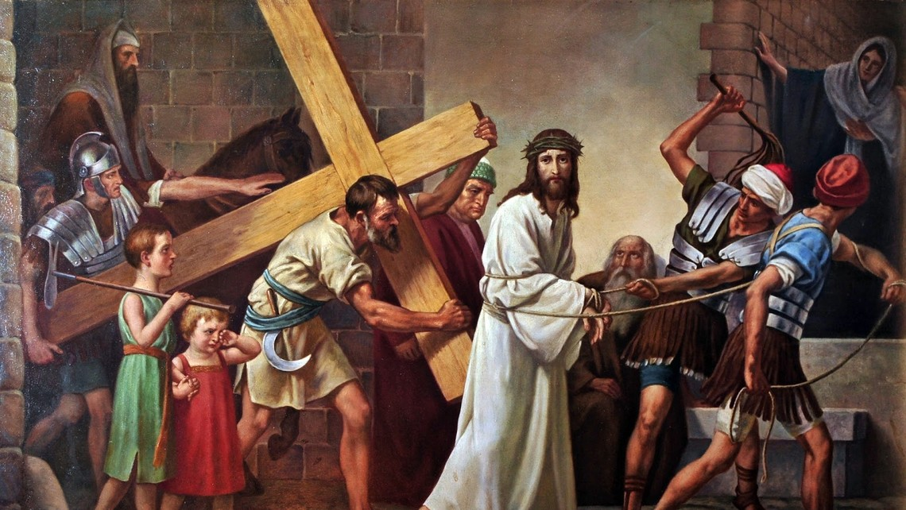

ദുഃഖവെള്ളി
ദുഃഖവെള്ളി
(കാർമ്മികനും ശുശ്രൂഷികളും ക്രമപ്രകാരം വചനവേദിയിൽ വരുന്നു. കാർമ്മികൻ ബലിപീഠത്തിലേക്ക് തിരിഞ്ഞ് മുട്ടുകുത്തി നിൽക്കുന്നു. ജനങ്ങളും മുട്ടുകുത്തി നിൽക്കുന്നു. പത്ത് സെക്കൻഡ് നേരം മരമണി അടിക്കുന്നു. തുടർന്നു സമൂഹം താഴെ കാണുന്ന ഗീതം ആലപിക്കുന്നു. "വീണു താതനോടർത്ഥിച്ചു" എന്ന് പാടുമ്പോൾ കാർമ്മികൻ കുനിഞ്ഞു നിലം മുത്തുന്നു.)
ഗാനം
കഴിയുമെങ്കിലീപ്പാനപാത്രമെന്
പ്രിയതാതാ, മാറ്റിത്തരണമേ
താണു ദൈവത്തിന് സൂനു ഭൂമിയില്
വീണു താതനോടര്ത്ഥിച്ചു.
കഴിയു...
മര്ത്യപാപങ്ങള് വന്നുയര്ന്നൊരു
മാമല തീര്ത്തു നിൽക്കവേ
ഭീതിയാല് മുതുമേനിയാകവേ
രക്തധാരയിലാഴ്ന്നുപോയ്
കഴിയു...
മാലാഖമാരുടെ കീര്ത്തനം
(ലൂക്കാ 2:14)
കാര്മ്മി: അത്യുന്നതങ്ങളിൽ ദൈവത്തിനു സ്തൂതി.
സമൂഹം: ആമ്മേന്.
കാര്മ്മി: ഭൂമിയില് മനുഷ്യര്ക്കു സമാധാനവും പ്രത്യാശയും എപ്പോഴും എന്നേക്കും.
സമൂഹം: ആമ്മേന്.
(പകരം ഗാനം)
കാര്മ്മി: അത്യുന്നതമാം സ്വര്ല്ലോകത്തില് സര്വ്വേശനു സ്തൂതി ഗീതം.
സമൂഹം: ഭൂമിയിലെങ്ങും മര്ത്യനു ശാന്തി പ്രത്യാശയു മെന്നേക്കും.
കാര്മ്മി: സ്വര്ഗ്ഗസ്ഥനായ ഞങ്ങളുടെ പിതാവേ (സമൂഹവും ചേർന്ന്) അങ്ങയുടെ നാമം പൂജിതമാകണമെ / അങ്ങയുടെ രാജ്യം വരണമെ. അങ്ങയുടെ തിരുമനസ്സു സ്വര്ഗ്ഗത്തിലെപ്പോലെ ഭൂമിയിലുമാകണമെ. ഞങ്ങള്ക്കു ആവശ്യകമായ ആഹാരം / ഇന്നു ഞങ്ങള്ക്കു തരണമെ. ഞങ്ങളുടെ കടക്കാരോടു ഞങ്ങള് ക്ഷമിച്ചിരിക്കുന്നതുപോലെ, ഞങ്ങളുടെ കടങ്ങളും പാപങ്ങളും ഞങ്ങളോടു ക്ഷമിക്കണമെ. ഞങ്ങളെ പ്രലോഭനത്തില് ഉള്പ്പെടുത്തരുതെ. ദുഷ്ടാരൂപിയില്നിന്നു ഞങ്ങളെ രക്ഷിക്കണമെ. എന്തുകൊണ്ടെന്നാല് /രാജ്യവും ശക്തിയും മഹത്വവും എന്നേക്കും അങ്ങയുടേതാകുന്നു. ആമ്മേന്.
സ്വര്ഗ്ഗസ്ഥനായ ഞങ്ങളുടെ പിതാവേ / അങ്ങയുടെ മഹത്വത്താല് സ്വര്ഗ്ഗവും ഭൂമിയും നിറഞ്ഞിരിക്കുന്നു / മാലാഖമാരും മനുഷ്യരും അങ്ങു പരിശുദ്ധന് പരിശുദ്ധന് പരിശുദ്ധന് എന്ന് ഉല്ഘോഷിക്കുന്നു.
ശുശ്രൂഷി: നമുക്കു പ്രാര്ത്ഥിക്കാം; സമാധാനം നമ്മോടുകൂടെ.
കാര്മ്മി: മഹോന്നതനായ കര്ത്താവേ, ദൈവമായ അങ്ങയെ ഞങ്ങള് വാഴ്ത്തുന്നു. മഹത്വപൂര്ണ്ണമായ ത്രീത്വത്തെ ഞങ്ങള് എല്ലാ സമയവും സ്തുതിക്കുന്നു. ഞങ്ങളുടെ രക്ഷകനായ മിശിഹാ അനുഭവിച്ച പീഡകള് ഭക്തിപൂര്വ്വം ഞങ്ങള് അനുസ്മരിക്കുന്നു. പാപത്തിന്റെയും മരണത്തിന്റെയും മേല് മിശിഹാ നേടിയ വിജയത്തില് ഞങ്ങളെയും പങ്കാളികളാക്കേണമേ. അവിടുത്തെ പീഡാനുഭവത്തിന്റെയും മരണത്തിന്റെയും ഫലങ്ങള് പ്രാപിക്കുവാന് ഞങ്ങളെ അനുഗ്രഹിക്കണമേ. പിതാവും പുത്രനും പരിശുദ്ധാത്മാവുമായ സര്വ്വേശ്വരാ, എന്നേക്കും.
സമൂഹം: ആമ്മേന്.
സങ്കീര്ത്തനമാല
(സങ്കീ 22: 1-8, 11, 15-21, 24-28; 44: 8-26, 56: 1-13)
എന്റെ ദൈവമേ, എന്റെ ദൈവമേ,
എന്തുകൊണ്ട് നീ എന്നെ കൈവെടിഞ്ഞു?
എന്റെ ദൈവമേ, എന്റെ ദൈവമേ,
അങ്ങയെ കാര്യമായി മതിക്കാത്ത മനുഷ്യരുടെ കൈയില് എന്നെ വിട്ടുകൊടുക്കരുതേ.
എന്റെ ദൈവമേ, എന്റെ ദൈവമേ,
എന്തുകൊണ്ട് നീ എന്നെ കൈവെടിഞ്ഞു?
പകല് സമയം ഞാന് നിന്നെ വിളിച്ചു;
നീ എനിക്കുത്തരമരുളിയില്ല.
രാത്രിയിലും ഞാന് നിന്നെ വിളിച്ചു;
നീ എനിക്കായി കാത്തിരുന്നില്ല.
നീ പരിശുദ്ധനാകുന്നു
നിന്റെ മഹിമയില് ഇസ്രായേല് വസിക്കുന്നു.
എന്റെ പിതാക്കന്മാര് നിന്നില് ആശ്രയിച്ചു;
അവര് നിന്നില് ശരണം ഗമിച്ചു;
അപ്പോള് നീയവര്ക്ക് വിമോചനമേകി.
നിന്നോടവര് നിലവിളിച്ചു;
അവര് രക്ഷിക്കപ്പെടുകയും ചെയ്തു.
നിന്നില് അവര് ആശ്രയിച്ചു;
അവര് ലജ്ജിതരായില്ല;
ഞാന് മനുഷ്യനല്ല, കൃമിയാകുന്നു;
മനുഷ്യരുടെ നിന്ദാ വിഷയവും
ജനത്തിന്റെ പരിഹാസ പാത്രവുമാകുന്നു.
കാണുന്നവരെല്ലാം എന്നെ അവഹേളിക്കുന്നു;
അവര് വികൃതമായ ആംഗ്യങ്ങള് കാട്ടുകയും
തലയാട്ടുകയും ചെയ്യുന്നു.
കര്ത്താവു രക്ഷിക്കുമെന്ന് അവന് പ്രത്യാശിച്ചു
അവനില് സംപ്രീതനാണെങ്കില്
കര്ത്താവ് അവനെ രക്ഷിക്കട്ടെ
എന്നില്നിന്ന് നീ അകന്നിരിക്കരുതേ
ഇതാ, ദുരിതം അടുത്തിരിക്കുന്നു;
എന്നെ സഹായിക്കാന് ആരുമില്ല.
നായ്ക്കള് എന്റെ ചുറ്റും കൂട്ടംകൂടി;
ദുഷ്ടരുടെ സംഘം എന്നെ വളഞ്ഞു.
എന്റെ കൈകളും കാലുകളും അവര് തുളച്ചു;
അസ്ഥികളെല്ലാം പ്രലപിച്ചു.
ആക്ഷേപപൂര്വ്വം അവര് തുറിച്ചുനോക്കി.
എന്റെ വസ്ത്രം അവര് ഭാഗിച്ചെടുത്തു;
അങ്കിക്കുവേണ്ടി അവര് ചിട്ടിയിട്ടു.
കര്ത്താവേ, നീ എന്നില് നിന്ന് അകന്നുപോകരുതേ
എന്റെ ദൈവമേ, എന്റെ ദൈവമേ,
സഹായത്തിനു വേഗം വരണമേ.
വാളില് നിന്ന് എന്റെ ജീവനെ രക്ഷിക്കണമേ;
ഏകാകിയായ എന്നെ
നായ്ക്കളില്നിന്ന് വിടുവിക്കണമേ.
സിംഹത്തിന്റെ വായില്നിന്ന് എന്നെ രക്ഷിക്കണമേ;
ഉയര്ന്ന കൊമ്പില് നിന്ന്
എളിയവനായ എന്നെ വിടുവിക്കണമേ.
അഗതിയുടെ അര്ത്ഥന അവന് നിന്ദിച്ചില്ല;
അവഗണിക്കുകയോ, മുഖം തിരിക്കുകയോ ചെയ്തില്ല
അയാള് വിളിച്ചപ്പോള് അവന് ശ്രവിച്ചു.
ജനസമൂഹത്തില് എനിക്കുള്ള സ്തൂതി
നിന്റെ പക്കല് നിന്നാകുന്നു
ഭക്തന്മാര് കാണ്കെ നേര്ച്ച ഞാന് നിവർത്തിക്കും.
ദരിദ്രര് ഭക്ഷിച്ചു തൃപ്തരാകും;
കര്ത്താവിനെ തേടുന്നവര് അവനെ സ്തുതിക്കും;
സംതൃപ്തരായി എന്നെന്നും ജീവിക്കും.
ഭൂവാസികള് എല്ലാവരും കര്ത്താവിനെ അനുസ്മരിക്കട്ടെ
അവര് അവന്റെ പക്കലേയ്ക്ക് പിന്തിരിയട്ടെ.
വിജാതീയരുടെ തലമുറകളെല്ലാം
തിരുമുമ്പില് പ്രണമിക്കട്ടെ.
രാജ്യം കര്ത്താവിന്റേതാകുന്നു;
വിജാതീയരുടെ അധിപന് അവനാകുന്നു.
(തുടർന്ന് സങ്കീർത്തനം 44)
ദിവസം മുഴുവന് ഞങ്ങള് നിന്നെ സ്തുതിച്ചു;
എന്നും നിന്റെ നാമം പ്രകീര്ത്തിച്ചു.
എന്നിട്ടും നീ ഞങ്ങളെ വിസ്മരിച്ചു;
ലജ്ജിക്കാന് ഞങ്ങള്ക്കിടയാക്കിയല്ലോ.
സൈന്യത്തോടൊപ്പം നീ ഇറങ്ങുന്നില്ല;
പിന്തിരിഞ്ഞോടുവാന് ഞങ്ങള്ക്കിടവരുത്തി;
ശത്രുക്കള് ഞങ്ങളെ കൊള്ളയടിച്ചു.
കൊന്നു തിന്നാനുള്ള ആടിനെപ്പോലെ
നീ ഞങ്ങളെ അവര്ക്കു നൽകി;
ജനതകള്ക്കിടയില് ഞങ്ങളെ ചിതറിച്ചു.
സ്വന്തം ജനത്തെ വിലയില്ലാതെ വിറ്റു;
അവരുടെ വില നീ വര്ദ്ധിപ്പിച്ചുമില്ല.
അയല്ക്കാര്ക്കു ഞങ്ങളെ പരിഹാസവിഷയമാക്കി;
ചുറ്റുമുള്ളവര്ക്ക് നിന്ദക്കും ആക്ഷേപത്തിനും പാത്രമാക്കി.
വിജാതീയരുടെ മധ്യത്തില് പഴമൊഴിയാക്കി;
ജനപദങ്ങള്ക്കിടയില് അവഹേളിതരാക്കി.
ദിവസം മുഴുവന് ഞാന് അപമാനിതനാകുന്നു;
ലജ്ജമൂലം ഞാന് മുഖം മറച്ചിരിക്കുന്നു.
നിന്ദിക്കുകയും ദുഷിക്കുകയും ചെയ്യുന്നവന്റെ സ്വരമുയരുന്നു
പ്രതികാരം ചെയ്യുന്ന ശത്രു ഇതാ എന്റെ മുമ്പില്.
ഇതെല്ലാം ഞങ്ങള്ക്കു സംഭവിച്ചു
എങ്കിലും ഞങ്ങള് നിന്നെ മറന്നില്ല.
നിന്റെ ഉടമ്പടി ഞങ്ങള് ലംഘിച്ചിട്ടില്ല;
പിന്നോക്കം ഞങ്ങള് തിരിഞ്ഞതില്ല;
നിന്റെ മാര്ഗത്തില് നിന്ന് മാറിയില്ല.
വീണ്ടും നീ ഞങ്ങളെ എളിമപ്പെടുത്തി;
മരണത്തിന്റെ നിഴലില് മൂടിക്കളഞ്ഞു.
എന്നിട്ടും തിരുനാമം ഞങ്ങള് വിസ്മരിച്ചില്ല;
അന്യദേവന്മാരുടെ നേര്ക്കു കൈ നീട്ടിയില്ല.
ഇതെല്ലാം പരിശോധിക്കുന്നത് ദൈവമാകുന്നു
ഹൃദയ വിചാരങ്ങള് അവനറിയുന്നു.
നിന്നെപ്രതി അനുദിനം ഞങ്ങള് വധിക്കപ്പെടുന്ന;
അറക്കാനുള്ള ആടുകളായി ഗണിക്കപ്പെടുന്നു.
കര്ത്താവേ, ഉറങ്ങരുതേ, ഉണരണമേ!
ഞങ്ങളെ ഓര്ക്കണമേ, മറക്കരുതേ!
ഞങ്ങളില് നിന്ന് തിരുവദനം തിരിക്കരുതേ!
ഞങ്ങളുടെ താഴ്ചയും ഞെരുക്കവും മറക്കരുതേ!
പൂഴിയോളം ഞങ്ങള് താണിരിക്കുന്നു;
ഉദരം നിലത്തൊട്ടിച്ചേര്ന്നുപോയി.
കാരുണ്യപൂര്വ്വം നീ എഴുന്നേല്ക്കണമേ!
സഹായിക്കണമേ! രക്ഷയരുളണമേ!
(തുടർന്ന് സങ്കീർത്തനം 56)
ദൈവമേ, എന്നോട് കരുണ തോന്നണമേ;
എന്തെന്നാല് മനുഷ്യര് എന്നെ ചവിട്ടിമെതിക്കുന്നു;
മല്ലന്മാര് ദിവസം മുഴുവന് എന്നെ ഞെരുക്കുന്നു.
ദിവസം മുഴുവന് എന്റെ ശത്രുക്കള് / എന്നെ ചവിട്ടി
മെതിക്കുന്നു; / അനേകം യോദ്ധാക്കള്
എനിക്കെതിരായി പ്രബലപ്പെടുന്നു.
ഞാന് ദൈവത്തില് ആശ്രയിക്കുന്നു
പകല് സമയത്തുപോലും ഞാന് ഭയപ്പെടുകയില്ല.
ദൈവത്തില് ഞാന് അഭിമാനിക്കുന്നു;
അവനില് ഞാന് സമാശ്രയിക്കുന്നു.
എനിക്കു ഭയാശങ്കകളില്ല,
മനുഷ്യന് എന്നോട് എന്തുചെയ്യാനാകും.
അവര് ദിവസം മുഴുവനും
എനിക്കെതിരായി ആലോചിക്കുന്നു;
തിന്മ നിരൂപിക്കുന്നു.
അവര് ഒളിച്ചിരിക്കുന്നു;
എന്നെ അപായപ്പെടുത്താന് കാത്തിരിക്കുന്നു;
എന്റെ കുതികാലുകളെ നിരീക്ഷിക്കുന്നു.
അവനെ രക്ഷിക്കാനാരുമില്ലെന്ന്
അവര് വീമ്പിളക്കുന്നു.
വിജാതീയരോടുള്ള കോപത്തില്
നീ അവരെ വിധിക്കണമേ.
ദൈവമേ, നിന്നിലുള്ള വിശ്വാസം ഞാന് അറിയിച്ചു
എന്റെ കണ്ണീരെല്ലാം തിരുസന്നിധിയില് സൂക്ഷിക്കണമേ;
നിന്റെ ഗ്രന്ഥത്തില് അവ രേഖപ്പെടുത്തണമേ.
എന്റെ ശത്രുക്കള് ലജ്ജിച്ചു പുറംതിരിയട്ടെ;
ദൈവം എന്നോടൊത്താണെന്ന് ഞാനറിയുന്നു.
ദൈവവചനം ഞാന് കീര്ത്തിക്കുന്നു;
ദൈവത്തില് ഞാന് ആശ്രയിക്കുന്നു.
എനിക്കു ഭയാശങ്കകളില്ല
മനുഷ്യന് എന്നോട് എന്തുചെയ്യാനാകും?
നിനക്കുള്ള നേര്ച്ചകള് ഞാന് നിറവേറ്റും;
കൃതജ്ഞതാബലി അര്പ്പിക്കും.
എന്റെ ആത്മാവിനെ മരണത്തില് നിന്നും
പാദങ്ങളെ വീഴ്ചയില് നിന്നും അങ്ങുന്ന് സംരക്ഷിച്ചു.
പിതാവിനും പുത്രനും പരിശുദ്ധാത്മാവിനും സ്തുതി;
ആദിമുതല് എന്നേക്കും, ആമ്മേന്.
എന്റെ ദൈവമേ, എന്റെ ദൈവമേ,
എന്തുകൊണ്ട് നീ എന്നെ കൈവെടിഞ്ഞു?
എന്റെ ദൈവമേ, എന്റെ ദൈവമേ,
അങ്ങയെ കാര്യമായി മതിക്കാത്ത മനുഷ്യരുടെ കൈയില്
എന്നെ വിട്ടുകൊടുക്കരുതേ.
ശുശ്രൂഷി: നമുക്കു പ്രാര്ത്ഥിക്കാം. സമാധാനം നമ്മോടുകൂടെ.
കാര്മ്മി: ഞങ്ങളുടെ കര്ത്താവായ ദൈവമേ, മനുഷ്യവംശത്തിനു നൽകിയ നന്മയ്ക്കായി അങ്ങയുടെ മഹനീയ ത്രീത്വത്തിന്റെ ഉന്നതവും ഭാഗ്യപൂര്ണ്ണവും പരിശുദ്ധവുമായ നാമത്തിന് സ്തുതിയും ബഹുമാനവും കൃതജ്ഞതയും ആരാധനയും നിരന്തരം സമര്പ്പിക്കുവാന് ഞങ്ങള് കടപ്പെട്ടവരാകുന്നു. പിതാവും പുത്രനും പരിശുദ്ധാത്മാവുമായ സര്വ്വേശ്വരാ, എന്നേക്കും.
സമൂഹം: ആമ്മേന്.
(കാർമ്മികൻ താഴെക്കാണുന്ന പ്രാർത്ഥന ചൊല്ലി ധൂപം ആശീർവദിക്കുന്നു. തത്സമയം ധൂപാർപ്പണഗീതം ആരംഭിക്കുന്നു. മദ്ബഹായുടെ വിരി തുറക്കുകയും തിരികൾ കത്തിക്കുകയും ചെയുന്നു. ശുശ്രൂഷി ധൂപാർപ്പണം നടത്തുന്നു.)
കാര്മ്മി: രക്തസാക്ഷികളുടെ മരണ ദിനത്തില് അവരുടെ ജീവിതബലി സ്വീകരിച്ച മിശിഹായേ, ഞങ്ങളുടെ ബലഹീനമായ കരങ്ങളില്നിന്നും ഈ ധൂപം കാരുണ്യപൂർവ്വം സ്വീകരിക്കണമേ, + എന്നേക്കും.
(ധൂപം ആശീർവദിക്കുന്നു)
സമൂഹം: ആമ്മേന്.
ധൂപാര്പ്പണഗീതം
(രീതി: ബാഹർലെമ്പാ ... യാദാ ഹൂശാവേ)
ശക്തനായ കർത്താവേ, അങ്ങേ കൂടാരം എത്ര മനോഹരമാകുന്നു
മിശിഹാകര്ത്താവേ,
നരകുലരക്ഷകനേ,
ഞങ്ങളണച്ചിടുമീ
പ്രാര്ത്ഥന തിരുമുമ്പില്
പരിമളമിയലും ധൂപം പോല്
കൈക്കൊണ്ടരുളേണം.
കര്ത്താവിന്റെ അങ്കണം എന്റെ ആത്മാവ് കാത്തിരുന്നു.
മിശിഹാകര്ത്താവേ ...
പിതാവിനും പുത്രനും പരിശുദ്ധാത്മാവിനും സ്തുതി.
മിശിഹാകര്ത്താവേ ...
ശുശ്രൂഷി: സമാധാനം നമ്മോടുകൂടെ.
കാര്മ്മി: ഞങ്ങളുടെ കര്ത്താവായ ദൈവമേ, അങ്ങു നല്കിയിട്ടുള്ളതും എന്നാല് കൃതജ്ഞത പ്രകാശിപ്പിക്കുവാന് ഞങ്ങള്ക്കു കഴിയാത്തതുമായ / എല്ലാ സഹായങ്ങള്ക്കും അനുഗ്രഹങ്ങള്ക്കുമായി / സകല സൗഭാഗ്യങ്ങളും നന്മകളും നിറഞ്ഞു മുടിചൂടിനില്ക്കുന്ന സഭയില് / ഞങ്ങള് അങ്ങയെ നിരന്തരം സ്തുതിക്കുകയും മഹത്വപ്പെടുത്തുകയും ചെയ്യട്ടെ. അങ്ങു സകലത്തിന്റെയും നാഥനും സൃഷ്ടാവുമാകുന്നു / പിതാവും പുത്രനും പരിശുദ്ധാത്മാവുമായ സര്വ്വേശ്വരാ എന്നേക്കും.
സമൂഹം: ആമ്മേന്.
(ഉത്ഥാന ഗീതം)
(എല്ലാവരും അൾത്താരയിലേക്ക് തിരിഞ്ഞു ശിരസ്സു നമിക്കുന്നു)
സര്വ്വാധിപനാം കര്ത്താവേ
നിന്നെ വണങ്ങി നമിക്കുന്നു
ഈശോ നാഥാ വിനയമൊടെ
നിന്നെ നമിച്ചു പുകഴ്ത്തുന്നു.
മര്ത്യനു നിത്യമഹോന്നതമാ
മുത്ഥാനം നീയരുളൂന്നു
അക്ഷയമവനുടെ ആത്മാവി
ന്നുത്തമരക്ഷയുമേകുന്നു.
ശുശ്രൂഷി: നമുക്കു പ്രാര്ത്ഥിക്കാം; സമാധാനം നമ്മോടുകൂടെ.
(കാർമ്മികൻ ജനങ്ങൾക്ക് നേരെ തിരിഞ്ഞ്)
കാര്മ്മി: എന്റെ കര്ത്താവേ നീ സത്യമായും ഞങ്ങളുടെ ശരീരങ്ങളെ ഉയര്പ്പിക്കുന്നവനും / ആത്മാക്കളെ രക്ഷിക്കുന്നവനും / ജീവനെ നിത്യം പരിപാലിക്കുന്നവനുമാകുന്നു. ഞങ്ങള് എപ്പോഴും നിനക്കു സ്തുതിയും കൃതജ്ഞതയും ആരാധനയും സമര്പ്പിക്കുവാന് കടപ്പെട്ടവരാകുന്നു / സകലത്തിന്റെയും നാഥാ എന്നേക്കും.
സമൂഹം: ആമ്മേന്.
(താഴെ വരുന്ന പ്രാർത്ഥനകൾ ഐശ്ചികമാണ്)
(ആദിഗീതം)
എൻറെ ജീവൻ അപകടത്തിലായിരിക്കുന്നു. ദൈവമേ, എന്നെ രക്ഷിക്കണമേ.
വീണു നിറുങ്ങിയ ഹൃദയംനീ,
സുഖമാക്കണമേ കര്ത്താവേ!
തേടുകയായ് ഞാന് സഹതാപം
സാന്ത്വനമേകാനില്ലാരും.
അവനെ നിങ്ങളുടെ അടുക്കലേക്ക് ഞാനയയ്ക്കും.
കയ്പു നിറഞ്ഞൊരു പാനീയം
ദാഹം തീര്ക്കാന് നൽകിയവർ;
അവരുടെ കണ്ണുകള് മങ്ങീടും
അവരുടെ ശക്തിയുമതുപോലെ.
പിതാവിനും പുത്രനും പരിശുദ്ധാത്മാവിനും സ്തൂതി.
അവരില് പതിയും നിന് കോപം
അതിലവരന്നു ദഹിച്ചീടും
പാപികളന്നാരക്ഷകനെ
പീഡിപ്പിച്ചു മുറിവേറ്റി.
ശുശ്രൂഷി: നമുക്കു പ്രാര്ത്ഥിക്കാം. സമാധാനം നമ്മോടുകൂടെ.
കാര്മ്മി: ഞങ്ങളുടെ കര്ത്താവേ, ഞങ്ങളുടെ ദൈവമേ, അങ്ങയുടെ അനന്തമായ കരുണയും നിരന്തരമായ പരിപാലനയുമോര്ത്ത് ഞങ്ങള് അങ്ങയെ ആരാധിക്കുകയും സ്തുതിക്കുകയും ചെയ്യുന്നു. പിതാവും പുത്രനും പരിശുദ്ധാത്മാവുമായ സര്വ്വേശ്വരാ, എന്നേക്കും.
സമൂഹം: ആമ്മേന്.
അനുഗീതം
നമ്മുടെ സഹായം കർത്താവിൻറെ നാമത്തിലാകുന്നു.
ക്രൂശിതനായി, ദൈവസുതന്
മാനവരക്ഷക മരണത്തില്
സൃഷ്ടികളെല്ലാം വിലപിപ്പു.
സൂര്യനിരുണ്ടു, പനിമതിതന്
പ്രഭയും മങ്ങീ, നിറഭേദം
നൽകീ നല്ലോരടയാളം.
ഞങ്ങളുടെ ഹൃദയവൃണങ്ങൾ സുഖമാക്കണമേ.
തിരുഭവനത്തിന്, തിരശ്ലീല
നെടുകെ കീറി, ഭൂതലമോ
സങ്കടമെല്ലാ, മറിയിച്ചു.
നൂതനമാകും ജനതതിയെ
ദിവ്യാത്മാവു ജനിപ്പിച്ചു.
നവമാം ജീവന് നല്കുകയായി.
പിതാവിനും പുത്രനും പരിശുദ്ധാത്മാവിനും സ്തുതി.
ക്രൂശിതനാകും, ദൈവസുതന്
പാണികള് രണ്ടും നീട്ടുന്നു.
ആശ്ശേഷിക്കുന്നഖിലരെയും.
ആദരപൂര്വ്വം നിരചേരാം.
പാപവിമോചിതരായീടാന്
രക്ഷാനാഥന് കൃപനൽകും.
(ഐശ്ചിക പ്രാർത്ഥനകൾ അവസാനിക്കുന്നു)
ശുശ്രൂഷി: നമുക്കു പ്രാര്ഥിക്കാം. സമാധാനം നമ്മോടുകൂടെ.
കാര്മ്മി: ഞങ്ങള്ക്കുവേണ്ടി മുറിവുകളേറ്റ് കുരിശില് സ്വയം ബലിയര്പ്പിച്ച കര്ത്താവേ, ഞങ്ങളുടെ മുറിവുകളെ സുഖപ്പെടുത്തണമേ. നിന്റെ ദാരുണമായ മരണത്തില് സൃഷ്ടികളെല്ലാം വിലപിച്ചുവല്ലോ. നിന്റെ പീഡാനുഭവത്തെയും മരണത്തെയും അനുസ്മരിക്കുന്ന ഞങ്ങള് ലോകത്തിനു മരിച്ചവരായി പരിശുദ്ധാത്മാവില് പുതുജീവന് പ്രാപിക്കുന്നതിനു കൃപചെയ്യണമേ. ഞങ്ങളുടെ പാപങ്ങളോര്ത്ത് ഞങ്ങള് പശ്ചാത്തപിക്കുന്നു. കര്ത്താവേ, ഞങ്ങളോടു കരുണ തോന്നണമേ. സകലത്തിന്റെയും നാഥാ, എന്നേക്കും.
സമൂഹം: ആമ്മേന്.
ത്രൈശുദ്ധ കീര്ത്തനം
ശബ്ദമുയര്ത്തിപ്പാടിടുവിന്
സര്വ്വരുമൊന്നായ് പാടിടുവിൻ
എന്നെന്നും ജീവിക്കും
സര്വ്വേശ്വരനെ വാഴ്ത്തിടുവിൻ
പരിപാവനനാം സര്വ്വേശാ
പരിപാവനനാം ബലവാനേ
പരിപാവനനാം അമര്ത്യനേ
നിന്കൃപ ഞങ്ങള്ക്കേകണമേ.
ശുശ്രൂഷി: നമുക്കു പ്രാര്ത്ഥിക്കാം; സമാധാനം നമ്മോടുകൂടെ.
കാര്മ്മി: വിശുദ്ധരില് സംപ്രീതനായി വസിക്കുന്ന / പരിശുദ്ധനും സ്തുത്യർഹനും ബലവാനും അമർത്യനുമായ കര്ത്താവേ, അങ്ങയുടെ സ്വഭാവത്തിനൊത്തവിധം / എപ്പോഴും ഞങ്ങളെ കടാക്ഷിക്കുകയും അനുഗ്രഹിക്കുകയും / ഞങ്ങളോടു കരുണകാണിക്കുകയും ചെയ്യണമേ. പിതാവും പുത്രനും പരിശുദ്ധാത്മാവുമായ സര്വ്വേശ്വരാ എന്നേക്കും.
സമൂഹം: ആമ്മേന്.
വചന ശുശ്രൂഷ
പഴയ നിയമ വായനകള്
ഒന്നാം വായന (ഉല്പത്തി 22: 1-19)
സങ്കീർത്തനം 27
കര്ത്താവ് എന്റെ രക്ഷയും പ്രകാശവുമാകുന്നു;
ഞാന് ആരെ പേടിക്കണം?
രഹസ്യങ്ങള് അറിയുന്ന ദൈവമേ,
അങ്ങയുടെ തിരുമുമ്പില്നിന്ന് എന്നെ തള്ളിക്കളയരുതേ.
കര്ത്താവ് എന്റെ ജീവന്റെ ശക്തിയാകുന്നു;
ആരില് നിന്ന് ഞാന് വിരണ്ടോടണം?
നിന്ദകരും എതിരാളികളും ദുര്വൃത്തരും
എന്നെ വിഴുങ്ങുവാന് സമീപിച്ചു
അപ്പോളവര് ഒന്നടങ്കം മറിഞ്ഞുവീണു.
ഒരു കാര്യം കര്ത്താവിനോടു ഞാന് ചോദിച്ചിട്ടുണ്ട്
അതുതന്നെ ഞാനപേക്ഷിക്കുന്നു.
എനിക്ക് ജീവിതകാലം മുഴുവന്
കര്ത്താവിന്റെ ഭവനത്തില് വസിക്കണം.
കര്ത്താവേ, നിന്നെ ഞാന് വിളിക്കുമ്പോള്
എന്റെ ശബ്ദം കേള്ക്കണമേ;
എന്നില് കനിയണമേ; എനിക്കുത്തരമരുളണമേ;
എന്റെ ഹൃദയം നിന്നോടു സംസാരിക്കുന്നു;
എന്റെ വദനം തിരുമുഖം തേടുന്നു.
കര്ത്താവേ, നിന്റെ മുഖം എന്നില്നിന്നു മറയ്ക്കരുതേ.
എന്റെ സഹായകനായ കര്ത്താവേ
നിന്റെ ദാസനായ എന്നെ
ദ്വേഷ്യത്തോടെ ശിക്ഷിക്കരുതേ.
കര്ത്താവേ, നിന്റെ വഴി എന്നെ പഠിപ്പിക്കണമേ;
നേര്വഴിയിലൂടെ എന്നെ നയിക്കണമേ;
എന്റെ വൈരികള്ക്ക് എന്നെ കയ്യാളിയാക്കരുതേ
എനിക്കെതിരായി കള്ളസാക്ഷികള് അണിനിരക്കുന്നു;
അവര് തിന്മ സംസാരിക്കുന്നു.
പിതാവിനും പുത്രനും പരിശുദ്ധാത്മാവിനും സ്തുതി;
ആദിമുതല് എന്നേക്കും, ആമ്മേന്.
കര്ത്താവ് എന്റെ രക്ഷയും പ്രകാശവുമാകുന്നു;
ഞാന് ആരെ പേടിക്കണം?
രഹസ്യങ്ങള് അറിയുന്ന ദൈവമേ,
അങ്ങേ തിരുമുമ്പില്നിന്ന് എന്നെ തള്ളിക്കളയരുതേ.
രണ്ടാം വായന (ഏശയ്യാ 52:13 - 53:9)
പ്രകീര്ത്തനം
കാര്മ്മി: സര്വ്വചരാചരവും,
ദൈവമഹത്വത്തെ, വാഴ്ത്തിപ്പാടുന്നു.
സമൂഹം: ദിവ്യാത്മാവിന് ഗീതികളാല്,
ഹല്ലേലുയ്യാ ഗീതികളാല്
കര്ത്താവിന് തിരുമരണത്തിൻ
നിര്മ്മലമാകുമനുസ്മരണം, കൊണ്ടാടാം,
ഇന്നീ വേദികയില്.
കാര്മ്മി: തന് മഹിമാവല്ലോ,
വാനിലുമൂഴിയിലും, തിങ്ങിവിളങ്ങുന്നു.
സമൂഹം: ദിവ്യാത്മാവിന് ഗീതികളാൽ ...
കാര്മ്മി: ജനതകളവിടുത്തെ,
മഹിമകള് പാടുന്നു, താണുവണങ്ങുന്നു.
സമൂഹം: ദിവ്യാത്മാവിന് ഗീതികളാൽ ...
കാര്മ്മി: നിത്യപിതാവിനും,
സുതനും റൂഹായ്ക്കും, സ്തുതിയുണ്ടാകട്ടെ.
സമൂഹം: ദിവ്യാത്മാവിന് ഗീതികളാൽ ...
കാര്മ്മി: ആദിയിലെപ്പോലെ,
ഇപ്പൊഴുമെപ്പോഴും, എന്നേക്കും ആമ്മേന്.
സമൂഹം: ദിവ്യാത്മാവിന് ഗീതികളാൽ ...
ശുശ്രൂഷി: നമുക്കു പ്രാര്ത്ഥിക്കാം; സമാധാനം നമ്മോടുകൂടെ.
കാര്മ്മി: ഞങ്ങളുടെ കര്ത്താവായ ദൈവമേ / അങ്ങയുടെ ജീവദായകവും ദൈവികവുമായ / കല്പനകളുടെ മധുരസ്വരം ശ്രവിക്കുന്നതിനും ഗ്രഹിക്കുന്നതിനും / ഞങ്ങളുടെ ബുദ്ധിയെ പ്രകാശിപ്പിക്കണമെ. അതുവഴി ആത്മശരീങ്ങള്ക്കുപകരിക്കുന്ന / സ്നേഹവും ശരണവും രക്ഷയും ഞങ്ങളില് ഫലമണിയുന്നതിനും / നിരന്തരം ഞങ്ങള് അങ്ങയെ സ്തുതിക്കുന്നതിനും / അങ്ങയുടെ കാരുണ്യത്താലും അനുഗ്രഹത്താലും ഞങ്ങളെ സഹായിക്കണമെ. പിതാവും പുത്രനും പരിശുദ്ധാത്മാവുമായ സര്വ്വേശ്വരാ എന്നേക്കും.
സമൂഹം: ആമ്മേന്.
വ്യാഖ്യാന ഗീതം [ഐശ്ചികം]
സകലേശ്വരനാം ദൈവം
ഭൂവിന്നുടയോന് രാജമഹേശന് തന്റെ
സ്നേഹവിരുന്നിന് ക്ഷണമുള്ളോരേ, വരുവിന് നിങ്ങള്.
പരിശോധിപ്പിന് വേഗം
സുവിശേഷത്തിന് ദിവ്യപ്രഭയില് നിങ്ങള്
ശുചിയാക്കീടിന് ഭാതികചിന്താസരണികളെല്ലാം.
നാഥന് സദയം നൽകീ
സൗഭാഗ്യത്തിൻ നിക്ഷേപങ്ങള് മന്നില്
പാപികള് വരുവിന് കടബാധ്യതകള് നീക്കുക നിങ്ങള്.
ദൈവികരാജ്യം നേടാന്
ഹൃദയതലങ്ങള് ശുചിയാക്കിടുവിന് ചേലില്
ശിശുവിനുതുല്യം നിര്മ്മലരായിത്തീരുക വീണ്ടും.
റോമാക്കാര്ക്കായ് പൗലോസ്
എഴുതിയ കത്താല് നമ്മെയുമിപ്പോള് മോദാല്
ദൈവികദൗത്യം അറിയിപ്പതു നാം കേള്ക്കുക യുക്തം.
ലേഖനം
(റോമാ 5:6-16)
(കാർമ്മികൻ ധൂപം ആശീർവദിക്കുന്നു. അപ്പോൾ താഴെ വരുന്ന ഗീതം ആലപിക്കുന്നു).
ഗീതം
സ്വന്തം ജനങ്ങള്ക്കു ജീവനേകാന്
സര്വ്വേശ നന്ദനന് ഭൂവില് വന്നു:
കുരിശാണാ നാഥനായ്ത്തീര്ത്തു ലോകം;
വ്യഥയാണാ നാഥനില് ചേര്ത്തു ലോകം.
ഇരുളില് പ്രകാശം തെളിച്ചുകാട്ടാന്
പരമപ്രകാശം കനിഞ്ഞിറങ്ങി:
കുരിശാണാനാഥനായ് ത്തീര്ത്തു ലോകം:
വ്യഥയാണാ നാഥനില്ച്ചേര്ത്തു ലോകം.
സ്വന്തം ജനങ്ങള്ക്കു ...
വ്യാഖ്യാന ഗീതം [ഐശ്ചികം]
വിശ്വാസികളേ, കേള്പ്പിന്.
സാഖ്യവുമുയിരും പകരും മൊഴികള് മോദാല്
ദൈവകുമാരന് നരനായ് നമ്മെ മോചിതരാക്കി.
ഈ മൊഴി നിങ്ങള്ക്കേകി
ഭാഗ്യം നിറയും വലിയൊരു നിധിയീ ഭൂവില്
പാവനഗ്രന്ഥം ജീവന് നൽകും ഓഷധമല്ലോ.
ജീവന് നൽകാൻ പോരും
ജീവത വചനം കേള്ക്കിലൊളിക്കും സാത്താന്
ബാധകളേതും ഭീതിയോടുടനെ ഒഴിവായീടും.
പ്രഭ വിതറീടും ദീപം
ജീവന് തന്നെ ഈ സദ്വചനം പാരില്
വിധിയാളനെയീ വചനം നിതരാം വെളിവാക്കുന്നു.
ജനതതിയെല്ലാം ചേലില്
രക്ഷിതരായി നാഥന് വഴിയായ് ഭൂവില്
പാപകടങ്ങള് മോചിപ്പവനീ നാഥന് മാത്രം.
വിത്തു വിതയ്ക്കും നാഥന്
തിരുവചനത്തിന് വിത്തുവിതയ്ക്കാന് വന്നു.
വയലിനുപകരം ഹൃദയനിലങ്ങള് നൽകുക നിങ്ങള്.
സുവിശേഷകര് തന് സാക്ഷ്യം
അനുഭവ മധുനാ വിവരിക്കുന്നു കേള്ക്കാന്
ചെവിയുള്ളവനോ കേട്ടു ഫലങ്ങള് നൽകീടട്ടെ.
(സുവിശേഷ വായനക്ക് പകരം പീഡാനുഭവചരിത്രം വായിക്കുന്നു).
പീഡാനുഭവ ചരിത്രം
(പ്രസംഗകൻ (ഒന്നാം സഹായി) പീഡാനുഭവ ചരിത്രം വായിക്കുന്നു. ഈശോയുടെ ഭാഗം കാർമ്മികനും മറ്റുള്ളവരുടെ ഭാഗങ്ങൾ (മറുപടി) രണ്ടാം സഹായിയുമാണ് വായിക്കേണ്ടത്. പലർ ഒന്നിച്ചുപറയുന്ന വാക്കുകൾ സമൂഹം വായിക്കുന്നു).
പ്രസം: നമ്മുടെ കര്ത്താവീശോമിശിഹായുടെ പീഡാനുഭവ ചരിത്രം. ഇവ അരുളിച്ചെയ്ത ശേഷം ശിഷ്യന്മാരെയും കൂട്ടികൊണ്ട് ഈശോ കെദ്രോന് തോടു കടന്നു പതിവുപോലെ ഒലിവു മലയിലേക്കു പോയി. അവിടെ ഗെദ്സേമന് എന്ന പേരില് ഒരു തോട്ടമുണ്ടായിരുന്നു. ഈശോയും ശിഷ്യന്മാരും അതില് പ്രവേശിച്ചു. അപ്പോള് അവിടുന്ന് അവരോട് ഇങ്ങനെ അരുളിച്ചെയ്തു.
ഈശോ: ഞാന് പോയി പ്രാര്ത്ഥിക്കട്ടെ. നിങ്ങള് ഇവിടെ ഇരിക്കുവിന്. പരീക്ഷയിലുള്പ്പെടാതിരിക്കുവാന് പ്രാര്ത്ഥിക്കുകയും ചെയ്യുവിന്.
പ്രസം: അനന്തരം ഈശോ പത്രോസിനെയും, സബ്ദൈയുടെ പുത്രന്മാരായ യാക്കോബ്, യോഹന്നാന് എന്നിവരെയും കൂട്ടികൊണ്ട് അല്പദൂരം മുമ്പോട്ടു നീങ്ങി. അവിടെ വച്ച് ഈശോ അപാരമായ ദുഃഖത്താല് വിവശനായിത്തീര്ന്നു. അവിടുന്ന് അവരോട് ഇപ്രകാരം അരുളിച്ചെയ്തു.
ഈശോ: എന്റെ ആത്മാവു മരണവേദനയനുഭവിക്കുന്നു; നിങ്ങള് എന്നോടുകൂടെ ഉണര്ന്നിരിക്കുവിന്.
പ്രസം: അനന്തരം അവിടുന്ന് ഒരു കല്ലേറു ദൂരെ മാറി മുട്ടുകത്തി സാഷ്ടാംഗം വീണ് ഇങ്ങനെ പ്രാര്ത്ഥിച്ചു:
ഈശോ: പിതാവേ, കഴിയുമെങ്കില് ആ മണിക്കൂര് എന്നില്നിന്ന് അകുന്നുപോകട്ടെ. അങ്ങു സർവ്വശക്തനാണല്ലോ. ഈ കാസ എന്നില്നിന്നു മാറ്റിത്തരണമേ. എങ്കിലും എന്റെ ഇഷ്ടമല്ല. അങ്ങയുടെ ഇഷ്ടം നിറവേറട്ടെ.
പ്രസം: ഈശോ ശിഷ്യന്മാരുടെ പക്കലേക്കു മടങ്ങിച്ചെന്നപ്പോള് അവര് ഉറങ്ങുന്നതാണു കണ്ടത്. അപ്പോള് അവിടുന്നു പത്രോസിനോടു ചോദിച്ചു:
ഈശോ: ശിമയോനേ, നീ ഉറങ്ങുകയാണോ? ഒരു മണിക്കൂർ നേരം എന്നോടുകൂടെ ഉണര്ന്നിരിക്കുവാന് നിങ്ങള്ക്കു കഴിഞ്ഞില്ലല്ലോ? പരീക്ഷയില് ഉൾപെടാതിരിക്കുവാൻ ഉണര്ന്നിരുന്നു പ്രാർത്ഥിക്കുവിൻ. ആത്മാവു സനദ്ധമാണെങ്കിലും ശരീരം ബലഹീനമായിരിക്കുന്നു.
പ്രസം: അവിടുന്നു വീണ്ടും പോയി അതേ വാക്കുകള് തന്നെ പറഞ്ഞു പ്രാര്ത്ഥിച്ചു.
ഈശോ: എന്റെ പിതാവേ, ഈ കാസ ഞാന് കുടിക്കാതെ നിവൃത്തിയില്ലെങ്കില് അങ്ങയുടെ ഇഷ്ടം നിറവേറട്ടെ.
പ്രസം: ഈശോ വീണ്ടും തിരിച്ചു ചെന്നപ്പോഴും അവര് ഉറങ്ങുന്നതായിട്ടാണ് കണ്ടത്. അവരുടെ കണ്ണുകള് അത്രയ്ക്കു നിദ്രാഭാരമുള്ളവയായിരുന്നു. അവിടുത്തോട് എന്തു മറുപടി പറയണമെന്നറിയാതെ അവര് വിഷമിച്ചു. ഈശോ അവരെ വിട്ടു മൂന്നാം പ്രാവശ്യവും പ്രാര്ത്ഥിക്കുവാന് പോയി. അവിടുന്ന് അതേ വാക്കുകള് തന്നെ ഉരുവിട്ടുകൊണ്ടിരുന്നു. അപ്പോള് ഈശോയെ ധൈര്യപ്പെടുത്തുവാന് സ്വര്ഗ്ഗത്തില്നിന്ന് ഒരു മാലാഖ പ്രത്യക്ഷനായി. വേദന കഠോരമായപ്പോള് അവിടുന്നു കൂടുതല് തീക്ഷ്ണതയോടെ പ്രാര്ത്ഥിച്ചു. അപ്പോള് അവിടുത്തെ വിയര്പ്പു രക്തത്തുള്ളികളായി നിലത്തുവീണു.
അവിടുന്നു പ്രാര്ത്ഥനകഴിഞ്ഞ് എഴുന്നേറ്റു മൂന്നാം പ്രാവശ്യം ശിഷ്യന്മാരുടെയടുക്കലേക്കു ചെന്നു. അവര് അപ്പോഴും ദു:ഖാര്ത്തരായി തളര്ന്നുറങ്ങുകയായിരുന്നു. അവിടുന്ന് അവരോട് അരുളിച്ചെയ്തു.
ഈശോ: ഇപ്പോഴും നിങ്ങള് ഉറങ്ങിവിശ്രമിക്കുകയാണോ? ഇതാ, മനുഷ്യപുത്രന് പാപികളുടെ കൈകളില് ഏല്പിക്കപെടുവാനുള്ള സമയമായി. എഴുന്നേല്ക്കുവിന് നമുക്കുപോകാം. എന്നെ ഒറ്റികൊടുക്കുന്നവൻ എത്തിക്കഴിഞ്ഞു.
പ്രസം: അവിടുത്തെ ഒറ്റിക്കൊടുത്ത യൂദാസിന് ആ സ്ഥലം അറിയാമായിരുന്നു. എന്തെന്നാല് ശിഷ്യന്മാരുമൊന്നിച്ച് ഈശോ പലപ്പോഴും അവിടെ പോകാറുണ്ടായിരുന്നു. യൂദാസ് പട്ടാളത്തെയും, പ്രധാനാചാര്യന്മാരുടെയും പ്രീശന്മാരുടെയും സേവകന്മാരെയും കൂട്ടികൊണ്ട് അവിടെച്ചെന്നു. അവര് വിളക്കുകളും പന്തങ്ങളും വാളുകളും വടികളും എടുത്തിരുന്നു. ഈശോ ശിഷ്യന്മാരോടു സംസാരിച്ചുകൊണ്ടിരിക്കുമ്പോഴാണ് പന്ത്രണ്ടു പേരില് ഒരുവനായ യൂദാസ് അവിടെയെത്തിയത്. ഒറ്റിക്കൊടുക്കാനിരുന്നവന് അവരോട് ഇങ്ങനെ പറഞ്ഞിട്ടുണ്ടായിരുന്നു.
മറുപടി: ഞാൻ ഒരാളെ ചുംബിക്കും. അവനാണ് മിശിഹാ. അവനെ നിങ്ങൾ ശ്രദ്ധാപൂർവ്വം പിടിച്ചുകൊള്ളണം
പ്രസം: അടുത്തെത്തിയ ഉടനെ യൂദാസ് ഇപ്രകാരം പറഞ്ഞുകൊണ്ട് ഈശോയെ ചുംബിച്ചു.
മറുപടി: ഗുരോ, സ്വസ്തി
പ്രസം: അപ്പോള് ഈശോ അയാളോടു ചോദിച്ചു.
ഈശോ: സ്നേഹിതാ, നീ ഇതിനാണോ വന്നത്? യൂദാസേ, ചുംബിച്ചു കൊണ്ടു നീ മനുഷ്യപുത്രനെ ഒറ്റിക്കൊടുക്കുകയാണോ?
പ്രസം: സംഭവിക്കാന് പോകുന്നതെല്ലാം അറിഞ്ഞിരുന്ന ഈശോ അവരുടെയടുക്കലേക്കു ചെന്ന് ഇപ്രകാരം ചോദിച്ചു
ഈശോ: നിങ്ങള് ആരെയാണ് അന്വേഷിക്കുന്നത്?
പ്രസം: അവര് അവിടുത്തോടു പറഞ്ഞു.
സമൂ: നസ്രായനായ ഈശോയെയാണ് ഞങ്ങള് അന്വേ ഷിക്കുന്നത്.
പ്രസം: ഈശോ അവരോട് അരുളിച്ചെയ്തു.
ഈശോ: അതു ഞാന് തന്നെയാകുന്നു.
പ്രസം: അവിടുത്തെ ഒറ്റിക്കൊടുത്ത യൂദാസും അക്കൂട്ടത്തിലുണ്ടായിരുന്നു. അതു ഞാന് തന്നെയാകുന്നു എന്ന് അവിടുന്ന് അരുളിച്ചെയ്ത ക്ഷണത്തില് അവരെല്ലാവരും പുറകോട്ടു മറിഞ്ഞു വീണു. ഈശോ വീണ്ടും അവരോടു ചോദിച്ചു:
ഈശോ: നിങ്ങള് ആരെയാണ് അന്വേഷിക്കുന്നത്?
പ്രസം: അവര് വീണ്ടും പറഞ്ഞു.
സമൂ: നസ്രായനായ ഈശോയെയാണു ഞങ്ങള് അന്വേഷിക്കുന്നത്.
പ്രസം: അവിടുന്ന് അവരോട് അരുളിച്ചെയ്തു:
ഈശോ: അതു ഞാന് തന്നെയാണെന്ന് നിങ്ങളോടു പറഞ്ഞുകഴിഞ്ഞല്ലോ. എന്നെയാണു നിങ്ങള് അന്വേഷിക്കുന്നതെങ്കില് ഇവരെല്ലാം പൊയ്ക്കൊള്ളട്ടെ.
പ്രസം: അങ്ങ് എന്നെ ഏല്ലിച്ചിരുന്നവരില് ആരെയും ഞാന് നഷ്ടപ്പെടുത്തിയില്ല എന്നുള്ള തന്റെ വചനം പൂര്ത്തിയാക്കുവാനാണ് അവിടുന്ന് ഇപ്രകാരം പറഞ്ഞത്.
എന്താണ് സംഭവിക്കാന് പോകുന്നതെന്നു മനസ്സിലാക്കിയ ശിഷ്യന്മാര് അവിടുത്തോടു ചോദിച്ചു:
മറുപടി: കർത്താവേ, ഞങ്ങളും വാളെടുക്കട്ടെയോ?
പ്രസം: ശിമയോന് പത്രോസിന്റെ കൈവശം ഒരു വാളുണ്ടായിരുന്നു. അയാള് പെട്ടെന്ന് അത് ഊരി പ്രധാനാചാര്യന്റെ സേവകനെ വെട്ടി അവന്റെ വലത്തുചെവി മുറിച്ചുകളഞ്ഞു. ആ സേവകന്റെ പേര് മാല്ക്കൂസ് എന്നായിരുന്നു. അവന്റെ ചെവി തൊട്ടുസുഖപ്പെടുത്തിയ ശേഷം ഈശോ പത്രോസിനോട് അരുളിച്ചെയ്തു.
ഈശോ: വാള് അതിന്റെ ഉറയിലിടുക. വാളെടുക്കുന്നവന് വാളാല്തന്നെ മരിക്കും. ഞാന് എന്റെ പിതാവിനോട് അപേക്ഷിച്ചാല് ക്ഷണനേരം കൊണ്ട് പന്ത്രണ്ടിലേറെ വ്യൂഹം മാലാഖമാരെ അയച്ച് ശത്രുകരങ്ങളില് നിന്ന് എന്നെ രക്ഷിക്കയില്ലെന്നാണോ നീ കരുതുന്നത്? അങ്ങനെ ചെയ്താല്, ഇതെല്ലാം സംഭവിക്കണമെന്ന തിരുവെഴുത്ത് എങ്ങനെ പൂര്ത്തിയാകും? എന്റെ പിതാവ് എനിക്കുതന്ന കാസ ഞാന് കുടിക്കേണ്ടതല്ലയോ?
പ്രസം: അനന്തരം ഈശോ ആ ജനക്കൂട്ടത്തോട് അരുളിച്ചെയ്തു.
ഈശോ: ഒരു കവര്ച്ചക്കാരനെ പിടിക്കാന് എന്നവണ്ണം വാളുകളും വടികളുമായ് നിങ്ങള് ഇപ്പോള് എന്റെ അടുക്കല് വന്നിരിക്കുന്നു. ഞാന് എല്ലാ ദിവസവും ദേവാലയത്തില് പഠിപ്പിച്ചിരുന്നവനല്ലേ? അന്നൊന്നും നിങ്ങള് എന്നെ പിടികൂടിയില്ലല്ലോ? ഇതു നിങ്ങളുടെ സമയമാണ്. ഇത് അന്ധകാരത്തിന്റെ ഭരണമാണ്. പ്രവചനങ്ങള് പൂര്ത്തിയാകുവാന് ഇങ്ങനെയെല്ലാം സംഭവിച്ചേ മതിയാവു.
പ്രസം: അപ്പോള് സഹസ്രാധിപനും പട്ടാളക്കാരും യൂദന്മാരുടെ പരിചാരകരും ചേര്ന്ന് ഈശോയെ പിടിച്ചു ബന്ധിച്ചു. അതുകണ്ടു ശിഷ്യന്മാരെല്ലാവരും അവിടുത്തെ ഉപേക്ഷിച്ച് ഓടിപ്പോയി. എന്നാല് ഒരു യുവാവ് ഈശോയെ അനുഗമിച്ചിരുന്നു. അവര് അയാളെ പിടികൂടി. ധരിച്ചിരുന്ന വസ്ത്രമുപേക്ഷിച്ച് അയാളും ഓടി രക്ഷപെട്ടു.
ഈശോയെ ആദ്യം അവര് അന്നാസിന്റെ പക്കലേയ്ക്കാണു കൊണ്ടുപോയത്. എന്തെന്നാല് അയാള് അക്കൊല്ലത്തെ മഹാപുരോഹിതനായിരുന്ന കയ്യപ്പായുടെ ശ്വശൂരനായിരുന്നു. ജനങ്ങള് ഒന്നാകെ നശിക്കാതിരിക്കാന് ഒരാള് അവര്ക്കുപകരം മരിക്കുന്നതു നല്ലതാണെന്ന് ഒരിക്കല് പ്രസ്താവിച്ചിട്ടുള്ള ഒരു മനുഷ്യനായിരുന്നു കയ്യാപ്പാ.
പ്രധാനാചാര്യന് ഈശോയോട് അവിടുത്തെ ശിഷ്യന്മാരെയും ഉപദേശത്തെയുംപറ്റി ചോദിച്ചു. ഈശോ ഇപ്രകാരം മറുപടി പറഞ്ഞു.
ഈശോ: ഞാന് ജനങ്ങളോടു പരസ്യമായിട്ടാണു സംസാരിച്ചിട്ടുള്ളത്. യൂദന്മാരുടെ സംഘത്തിലും ദേവാലയത്തിലുമല്ലാതെ രഹസ്യമായി ഞാന് ഒന്നും പഠിപ്പിച്ചിട്ടില്ല. പിന്നെ എന്തിനാണ് എന്നോടു ചോദിക്കുന്നത്? ഞാന് എന്തു പറഞ്ഞുവെന്ന് എന്റെ ശ്രോതാക്കളോടു തന്നെ ചോദിക്കുക. ഞാന് പറഞ്ഞതെല്ലാം അവര്ക്കറിയാമല്ലോ.
പ്രസം: അവിടുന്ന് അങ്ങനെ അരുളിച്ചെയ്തുപ്പോള് അടുത്തു നിന്നിരുന്ന ഒരു പരിചാരകന് ഇപ്രകാരം ചോദിച്ചുകൊണ്ട് അവിടുത്തെ കവിള്ത്തടത്തില് അടിച്ചു.
മറുപടി: ഇങ്ങനെയാണോ പ്രധാനാചാര്യനോട് മറുപടി പറയുന്നത് ?
പ്രസം: ഈശോ അയാളോടു ചോദിച്ചു.
ഈശോ: ഞാന് പറഞ്ഞതില് എന്തെങ്കിലും തെറ്റുണ്ടെങ്കില് അതു കാണിച്ചുതരിക. തെറ്റൊന്നുമില്ലെങ്കില് പിന്നെ എന്തിനാണ് എന്നെയടിച്ചത്?
പ്രസം: അന്നാസ് ഈശോയെ ബന്ധിതനായിത്തന്നെ പുരോഹിതനായ കയ്യപ്പായുടെയടുക്കലേക്കയച്ചു. പ്രധാനാചാര്യന്മാരും നിയമജ്ഞന്മാരും ജനപ്രമാണികളുമെല്ലാം അവിടെ സമ്മേളിച്ചിരുന്നു. പ്രധാനാചാര്യന്മാരും ന്യായാധിപസംഘവും ഈശോയെ വധശിക്ഷയ്ക്കു വിധിക്കുവാനുള്ള തെളിവുണ്ടാക്കുവാന് പരിശ്രമിക്കുകയായിരുന്നു. എന്നാല് അതില് അവര് പരാജയമടഞ്ഞു. പലരും അവിടുത്തേക്കെതിരായി കള്ളസാക്ഷ്യം പറയുവാന് തയ്യാറായിച്ചെന്നെങ്കിലും അവരുടെ സാക്ഷ്യങ്ങള് തമ്മില് പൊരുത്തപ്പെടാതെപോയി. അവസാനം രണ്ടു കള്ളസാക്ഷികള് ചേര്ന്ന് ഇങ്ങനെ മൊഴികൊടുത്തു.
സമൂ: മനുഷ്യനിര്മ്മിതമായ ഈ ദേവാലയം നശിപ്പിച്ചു / മൂന്നു ദിവസങ്ങള്ക്കകം / മനുഷ്യനിര്മ്മിതമല്ലാത്ത മറ്റൊന്നു / ഞാന് പണിയും എന്ന് / ഈ മനുഷ്യന് പറയുന്നത് ഞങ്ങള് കേട്ടിട്ടുണ്ട്.
പ്രസം: എന്നാല് അവിടെയും അവരുടെ സാക്ഷ്യങ്ങള്ക്കു തമ്മില് പൊരുത്തമില്ലായിരുന്നു. മഹാപുരോഹിതന് അവരുടെ മദ്ധ്യേ എഴുന്നേറ്റു നിന്നുകൊണ്ട് ഈശോയോടു ചോദിച്ചു:
മറുപടി: ഈ മനുഷ്യരെല്ലാം നിനക്കെതിരായി നൽകുന്ന സാക്ഷ്യങ്ങളെക്കുറിച്ച് നിനക്കൊന്നും പറയാനില്ലേ ?
പ്രസം: ഈശോ യാതൊരു മറുപടിയും നൽകിയില്ല. മഹാപുരോഹിതന് വീണ്ടും ചോദിച്ചു.
മറുപടി: നീ ദൈവപുത്രനായ മിശിഹാ തന്നെയോ എന്ന് ഞങ്ങളോട് പറയണമെന്ന് സജീവ ദൈവത്തിൻറെ നാമത്തിൽ ശപഥം ചെയ്തു ഞാൻ ആവശ്യപെടുന്നു.
പ്രസം: ഈശോ അരുളിച്ചെയ്തു.
ഈശോ: അങ്ങുതന്നെ അതു പറഞ്ഞുകഴിഞ്ഞിരിക്കുന്നു. മനുഷ്യപുത്രന് സര്വ്വശക്തന്റെ വലത്തുഭാഗത്ത് ഇരിക്കുന്നതും, വാനമേഘങ്ങളില് എഴുന്നള്ളിവരുന്നതും നിങ്ങള് കാണുമെന്നു ഞാന് നിങ്ങളോടു പറയുന്നു.
പ്രസം: അതു കേട്ടപ്പോള് മഹാപുരോഹിതന് തന്റെ വസ്ത്രങ്ങള് വലിച്ചു കീറികൊണ്ടു പറഞ്ഞു.
മറുപടി: ഇവൻ ദൈവദൂഷണം പറഞ്ഞിരിക്കുന്നു. ഇനി സാക്ഷികളെകൊണ്ട് നമുക്ക് എന്താവശ്യം? ഇവൻ ദൈവദൂഷണം പറയുന്നത് നിങ്ങൾ തന്നെ കേട്ടല്ലോ. നിങ്ങളുടെ അഭിപ്രായം എന്താണ് ?
പ്രസം: അവര് മറുപടി പറഞ്ഞു:
സമൂ: ഇവന് മരണശിക്ഷയ്ക്ക് അര്ഹനാകുന്നു.
പ്രസം: പിന്നീട് അവര് അവിടുത്തേ മുഖത്തു തുപ്പുകയും ഇടിക്കുകയും കരണത്ത് അടിക്കുകയും ചെയ്തു. കണ്ണുകള് മൂടിക്കെട്ടിയ ശേഷം ഇപ്രകാരം ചോദിച്ചുകൊണ്ട് അവിടുത്തെ അടിച്ചു;
സമൂ: നിന്നെ അടിച്ചത് ആരാണെന്നു പ്രവചിക്കുക.
പ്രസം: അവര് അവിടുത്തേക്കെതിരായി പല ദൂഷണങ്ങളും പറഞ്ഞു കൊണ്ടിരുന്നു. ശിമയോന് പത്രോസും മറ്റൊരു ശിഷ്യനും മഹാപുരോഹിതന്റെ അങ്കണം വരെ ദൂരത്തുകൂടി ഈശോയെ അനുഗമിക്കുന്നുണ്ടായിരുന്നു. ആ ശിഷ്യന് മഹാപുരോഹിതനെ പരിചയമുണ്ടായിരുന്നതിനാല് ഈശോയുടെ കൂടെ മഹാപുരോഹിതന്റെ നടുമുറ്റത്തു പ്രവേശിക്കുവാന് സാധിച്ചു. എന്നാല് പത്രോസ് പുറത്തു വാതില്ക്കല് നില്ക്കുകയായിരുന്നു. അതിനാല് മഹാപുരോഹിതനെ പരിചയമുണ്ടായിരുന്ന മറ്റേശിഷ്യന് ചെന്നു വാതില് കാവല്ക്കാരിയോടു ശുപാര്ശ ചെയ്തു. ശിമയോന് പത്രോസിനെയും അകത്തു പ്രവേശിപ്പിച്ചു. ആ വാതില് കാവല്ക്കാരി ശിമയോനോടു ചോദിച്ചു.
മറുപടി: താനും ആ മനുഷ്യൻറെ ഒരു ശിഷ്യനല്ലെയോ ?
പ്രസം: പെട്ടെന്ന് അയാള് മറുപടി പറഞ്ഞു:
മറുപടി: ഞാൻ ആ മനുഷ്യൻറെ ശിഷ്യനല്ല
പ്രസം: കാര്യങ്ങള് എങ്ങനെ അവസാനിക്കുമെന്നു കാണാനായി ശിമയോന് ഭൃത്യന്മാരോടുകൂടെ അകത്തു കാത്തിരുന്നു. കുളിരായിരുന്നതിനാല് ഭൃത്യന്മാരും സേവകന്മാരും തീ കൂട്ടി കാഞ്ഞുകൊണ്ടിരുന്നു. ശിമയോനും അവരുടെ കൂടെ തീ കായുകയായിരുന്നു. അപ്പോള് മഹാപുരോഹിതന്റെ ഒരു പരിചാരിക ആ വഴി വന്നു. അവള് ശിമയോനെ സൂക്ഷിച്ചു നോക്കിയശേഷം ഇങ്ങനെ ചോദിച്ചു:
മറുപടി: താനും നസ്രായനായ ഈശോയുടെ കൂടെയുണ്ടായിരുന്നവനല്ലേ ?
പ്രസം: എല്ലാവരുടെയും മുമ്പില് പത്രോസ് നിഷേധിച്ച് പറഞ്ഞു:
മറുപടി: നീ പറയുന്നത് എനിക്ക് മനസിലാകുന്നില്ല.ഞാൻ ആ മനുഷ്യനെ അറിയുകയില്ല.
പ്രസം: അനന്തരം അയാള് പടിവാതില്ക്കലേക്കു പോയി. അപ്പോള് കോഴി കൂവി. അല്പം കഴിഞ്ഞ് അവിടെ നിന്നിരുന്നവര് അടുത്തുചെന്നു പത്രോസിനോടു പറഞ്ഞു:
സമൂ: താനും അവരുടെ കൂടെയുള്ളവന് തന്നെ; സംശയമില്ല. തന്റെ സംസാരരീതി തന്നെ അതു തെളിയിക്കുന്നു.
പ്രസം: അപ്പോള് ശിമയോന് പത്രോസ് സത്യം ചെയ്ത് ആണയിട്ട് ഇങ്ങനെ പറഞ്ഞു:
മറുപടി: ഞാൻ ആ മനുഷ്യനെ അറിയുകയില്ല
പ്രസം: പ്രധാനാചാര്യന്റെ ഭൂത്യനും, പത്രോസ് ചെവി മുറിച്ചവന്റെ ചാര്ച്ചക്കാരനുമായ ഒരു മനുഷ്യന് പത്രോസിനോടു പറഞ്ഞു:
മറുപടി: തോട്ടത്തിൽ വച്ച് അയാളുടെ കൂടെ തന്നെയും ഞാൻ കണ്ടല്ലോ
പ്രസം: പത്രോസ് അതും നിഷേധിച്ചു. അയാള് സംസാരിച്ചുകൊണ്ടിരിക്കുമ്പോള് തന്നെ രണ്ടാം പ്രാവശ്യം കോഴി കൂവി. കര്ത്താവു തിരിഞ്ഞു പത്രോസിനെ നോക്കി. കോഴി കൂവുന്നതിനു മുമ്പു മൂന്നുപ്രാവശ്യം നീ എന്നെ നിഷേധിച്ചു പറയും എന്ന് അവിടുന്ന് അരുളിച്ചെയ്തിരുന്നതു പത്രോസ് അപ്പോള് ഓര്ത്തു. അയാള് പുറത്തേക്കു പോയി ഹൃദയം നൊന്തു കരഞ്ഞു.
നേരം വെളുത്തപ്പോള് പ്രധാനാചാര്യന്മാരും ജനപ്രമാണികളും നിയമജ്ഞരും ചേര്ന്ന് ഈശോയെ വധിക്കുന്നതിനെപ്പറ്റി ആലോചന നടത്തി. ന്യായാധിപസംഘത്തിന് മുമ്പാകെ അവിടുത്തെ ഹാജരാക്കിയ ശേഷം അവര് അവിടുത്തോട് ഇപ്രകാരം പറഞ്ഞു:
സമൂ: നീ മിശിഹായാണെങ്കില് അക്കാര്യം ഞങ്ങളോടു തുറന്നുപറയുക.
പ്രസം: അവിടുന്ന് ഇങ്ങനെ മറുപടി പറഞ്ഞു:
ഈശോ: എന്റെ വാക്കു നിങ്ങള് വിശ്വസിക്കയില്ല. എന്റെ ചോദ്യങ്ങള്ക്കു നിങ്ങള് മറുപടി പറയുകയുമില്ല: ഇന്നു മുതല് മനുഷ്യപുത്രന് സര്വ്വശക്തനായ ദൈവത്തിന്റെ വല ത്തഭാഗത്തിരിക്കും.
പ്രസം: അവര് വീണ്ടും അവിടുത്തോടു ചോദിച്ചു:
സമൂ: ആകയാല് നീ ദൈവപുത്രനാണെന്ന് പറയുകയാണോ?
പ്രസം: അവിടുന്ന് ഉത്തരമരുളി.
ഈശോ: ഞാന് ദൈവപുത്രനാണെന്ന് നിങ്ങള് തന്നെ പറഞ്ഞുകഴിഞ്ഞല്ലോ.
പ്രസം: അപ്പോള് അവര് പറഞ്ഞു:
സമൂ: നമുക്കിനി സാക്ഷികളെക്കൊണ്ട് എന്താണാവശ്യം? നാം തന്നെ നേരിട്ടു കേട്ടു കഴിഞ്ഞല്ലോ.
പ്രസം: അവര് അവിടുത്തെ ബന്ധിച്ചു ഗവര്ണറായിരുന്ന പന്തിയോസ് പീലാത്തോസിന്റെ മുമ്പാകെ ഹാജരാക്കി. ഈശോ വിധിക്കപ്പെട്ട വിവരമറിഞ്ഞപ്പോള് അവിടുത്തെ ഒറ്റിക്കൊടുത്ത യൂദാസ് മനഃക്ലേശത്തോടെ ആ മുപ്പതു വെള്ളിനാണയങ്ങളുമായി പ്രധാനാചാര്യന്മാരുടെയും ജന പ്രമാണികളുടെയും അടുക്കല് ചെന്ന് ഇപ്രകാരം പറഞ്ഞു:
മറുപടി: ഞാൻ പാപം ചെയ്തുപോയി: കുറ്റമില്ലാത്ത രക്തം ഞാൻ ഒറ്റികൊടുത്തു
പ്രസം: അവര് മറുപടി പറഞ്ഞു:
സമൂ: അതിനു ഞങ്ങളെന്തുവേണം? നീ പോയി നിന്റെ കാര്യം നോക്കിക്കൊള്ളുക.
പ്രസം: അവന് ആ നാണയത്തുട്ടുകള് ദേവാലയത്തിലേക്കു വലിച്ചെറിഞ്ഞിട്ടു പോയി തുങ്ങിച്ചത്തു. പ്രധാനാചാര്യന്മാര് ആ നാണയത്തുട്ടുകള് പെറുക്കിയെടുത്തിട്ട് ഇപ്രകാരം പറഞ്ഞു.
സമൂ: ഇതു രക്തത്തിന്റെ വിലയാകയാല് / നേര്ച്ചപ്പെട്ടിയിലിടുന്നതു ശരിയല്ല.
പ്രസം: അവര് കൂടിയാലോചിച്ചശേഷം ആ പണം കൊടുത്ത്, വിദേശികളെ സംസ്തരിക്കുവാന് ഒരു കുശവന്റെ പറമ്പു വാങ്ങി. ആ സ്ഥലം ഇന്നും രക്തപ്പറമ്പ് എന്ന പേരിലാണ് അറിയപ്പെടുന്നത്. വിലപ്പെട്ടവന്റെ വിലയായി ഇസ്രായേല്ക്കാര് കണക്കാക്കിയ മുപ്പതു വെള്ളി നാണയമെടുത്ത്, കര്ത്താവ് എന്നോടു കല്പിച്ചതുപോലെ അവര് കുശവന്റെ പറമ്പിനു കൊടുത്തു എന്നുള്ള ജെറമിയാസിൻറെ പ്രവചനം അങ്ങനെ പൂര്ത്തിയായി.
നേരം പുലര്ച്ചയായപ്പോള് അവര് ഈശോയെ കയ്യാപ്പായുടെ ഭവനത്തില്നിന്നു ഗവര്ണരുടെ കൊട്ടാരത്തിലേക്കു കൊണ്ടുപോയി. അശുദ്ധരാകാതെ പെസഹാ ഭക്ഷിക്കേണ്ടിയിരുന്നതിനാല് അവരാരും കൊട്ടാരത്തിലേക്കു പ്രവേശിച്ചില്ല. അതിനാല് പീലാത്തോസ് പുറത്തേക്കിറങ്ങിച്ചെന്ന് അവരോടു ചോദിച്ചു:
മറുപടി: എന്ത് കുറ്റമാണ് നിങ്ങൾ ഈ മനുഷ്യൻറെ മേൽ ആരോപിക്കുന്നത് ?
പ്രസം: അതിനു അവര് ഇങ്ങനെ മറുപടി പറഞ്ഞു:
സമൂ: കുറ്റക്കാരനല്ലായിരുന്നുവെങ്കില് ഞങ്ങള് അയാളെ അങ്ങയുടെ സമക്ഷം ഹാജരാക്കുകയില്ലായിരുന്നു.
പ്രസം: പീലാത്തോസ് അവരോടു പറഞ്ഞു:
മറുപടി: അങ്ങനെയെങ്കിൽ നിങ്ങൾതന്നെ അയാളെ കൊണ്ടുപോയി നിങ്ങളുടെ നിയമമനുസരിച്ച് വിസ്തരിച്ചുകൊള്ളുവിൻ
പ്രസം: ഉടനെ യൂദന്മാര് പീലാത്തോസിനോടു പറഞ്ഞു:
സമൂ: ആര്ക്കും മരണശിക്ഷ നൽകുവാൻ ഞങ്ങള്ക്കു അധികാരമില്ലല്ലോ.
പ്രസം: എങ്ങനെയാണു താന് മരിക്കാന് പോകുന്നതെന്നു സൂചിപ്പിച്ചുകൊണ്ട് ഒരിക്കല് ഈശോ പറഞ്ഞ വാക്കുകൾ അങ്ങനെ നിറവേറുകയായിരുന്നു. അനന്തരം അവര് ഈശോയുടെ മേല് ഓരോ കുറ്റങ്ങള് ആരോപിച്ചുതുടങ്ങി.
സമൂ: ഇയാള് ജനങ്ങളെ വഴിതെറ്റിക്കുകയും സീസറിനു കപ്പം കൊടുക്കുന്നതു തടയുകയും താന് രാജാവായ മിശിഹായാണെന്നു പറയുകയും ചെയ്തതായി ഞങ്ങള്ക്കറിയാം.
പ്രസം: അപ്പോള് പീലാത്തോസ് അകത്തേക്കു പോയി ഈശോയെ വിളിച്ച് ഇപ്രകാരം ചോദിച്ചു:
മറുപടി: നിങ്ങൾ യൂദന്മാരുടെ രാജാവാണോ?
പ്രസം: ഈശോ അരുളിച്ചെയ്തു.
ഈശോ: ഇത് അങ്ങ് സ്വയം ചോദിക്കുന്നുവോ, മറ്റുള്ളവർ എന്നെപ്പറ്റി പറഞ്ഞതുകൊണ്ട് ചോദിക്കുന്നുവോ ?
പ്രസം: മറുപടിയായി പീലാത്തോസ് ചോദിച്ചു:
മറുപടി: ഞാൻ ഒരു യൂദനല്ലലോ. നിങ്ങളുടെ ആളുകളും പ്രധാനാചാര്യന്മാരുമല്ലേ നിങ്ങളെ എൻറെ മുൻപിൽ ഹാജരാക്കിയത് ? നിങ്ങൾ എന്ത് കുറ്റമാണ് ചെയ്തത് ?
പ്രസം: അപ്പോള് ഈശോ അരുളിച്ചെയ്ത.
ഈശോ: എന്റെ രാജ്യം ഐഹികമല്ല: ആയിരുന്നെങ്കില് ഞാന് യുദന്മാരുടെ കൈകളില് വീഴാതിരിക്കുവാന് എന്റെ സേവകന്മാര് യുദ്ധം ചെയ്യുമായിരുന്നു. എന്റെ രാജ്യം ഇവിടെയല്ല.
പ്രസം: പീലാത്തോസ് വീണ്ടും ചോദിച്ചു:
മറുപടി: അപ്പോൾ നിങ്ങൾ ഒരു രാജാവ് തന്നെയാണെന്നോ ?
പ്രസം: ഈശോ ഉത്തരമരുളി:
ഈശോ: ഞാന് രാജാവാണെന്ന് അങ്ങു തന്നെ പറഞ്ഞു. സത്യത്തിനു സാക്ഷ്യം വഹിക്കുവാനാണ് ഞാന് ജനിച്ചിരിക്കുന്നത്. അതിനുവേണ്ടി തന്നെയാണു ഞാന് ലോകത്തിലേക്കു വന്നിരിക്കുന്നതും. സത്യത്തോടു ചേര്ന്നു നിലക്കന്നവരെല്ലാം എന്റെ ശബ്ദും കേള്ക്കുന്നു.
പ്രസം: അപ്പോള് പീലാത്തോസ് ചോദിച്ചു.
മറുപടി: സത്യം എന്താകുന്നു ?
പ്രസം: ചോദ്യം കഴിഞ്ഞ് ഉടന് തന്നെ അദ്ദേഹം യൂദന്മാരുടെ നേരേ തിരിഞ്ഞ് പ്രധാനാചാര്യന്മാരോടും ജനസമൂഹത്തോടും ഇങ്ങനെ പറഞ്ഞു:
മറുപടി: ഞാൻ ഈ മനുഷ്യനിൽ കുറ്റമൊന്നും കാണുന്നില്ല .
പ്രസം: അവര് വീണ്ടും ഈശോയില് കുറ്റം ആരോപിച്ചു തുടങ്ങി.
സമൂ: ഇയാള് ഗ്ലീലാ മുതല് ഇവിടെവരെ യൂദയാ രാജ്യത്തിലെങ്ങും പ്രസംഗിച്ചു ജനങ്ങളെ പ്രക്ഷോഭത്തിനു പ്രേരിപ്പിക്കുന്നു.
പ്രസം: ഗ്ലീലാ എന്നു കേട്ട ഉടനെ പീലാത്തോസ് ചോദിച്ചു:
മറുപടി: ഈ മനുഷ്യന്ന് ഗ്ലീലാക്കാരനാണോ?
പ്രസം: ഈശോ ഹേറോദേസിന്റെ അധികാരസീമയില് പ്പെട്ടവനാണെന്നറിഞ്ഞപ്പോള് പീലാത്തോസ് അവിടുത്തെ ഹേറോദേസിന്റെ പക്കലേക്കയച്ചു. അദ്ദേഹം അന്നു ജെറുസലത്തുണ്ടായിരുന്നു. ഈശോയെക്കണ്ടപ്പോള് ഹേറോദേസ് വളരെ സന്തോഷിച്ചു. അദ്ദേഹം ഈശോയെക്കുറിച്ചു പലതും കേട്ടിട്ടുണ്ടായിരുന്നു. അവിടുത്തെ ഒന്നു കാണാന് ആഗ്രഹിച്ചിരിക്കുകയുമായിരുന്നു. അവിടുന്ന് എന്തെങ്കിലും ഒരത്ഭുതം പ്രവര്ത്തിക്കുന്നതു കാണാമെന്ന് അദ്ദേഹം പ്രതീക്ഷിച്ചു.
ഹേറോദേസ് ഈശോയോടു പലതും ചോദിച്ചു. എന്നാല് അവിടുന്ന് ഒരു മറുപടിയും പറഞ്ഞില്ല. അവിടെയും, പ്രധാനാചാര്യന്മാരും നിയമജ്ഞരും ഈശോയ്ക്കെതിരായി ഓരോ ആരോപണങ്ങള് ഉന്നയിച്ചുകൊണ്ടിരുന്നു. അവസാനം ഹേറോദേസും പടയാളികളും കൂടി അവിടുത്തെ നിന്ദിച്ചു പരിഹസിക്കയും, വിലയേറിയ ഒരു വസ്ത്രം ധരിപ്പിച്ചു പീലാത്തോസിന്റെ പക്കലേക്കു തിരിച്ചയയ്ക്കുകയും ചെയ്തു. ശത്രുതയില്ക്കഴിഞ്ഞിരുന്ന ഹേറോദേസും പീലാത്തോസും അന്നുമുതല് മിത്രങ്ങളായിത്തീര്ന്നു.
പീലാത്തോസ് പ്രധാനാചാര്യന്മാരെയും ജനപ്രമാണികളെയും വിളിച്ചുകൂട്ടി ഇങ്ങനെ പറഞ്ഞു:
മറുപടി: ജനങ്ങളെ വഴിപിഴപ്പിക്കുന്നു എന്ന കുറ്റമാരോപിച്ചാണല്ലോ നിങ്ങൾ ഈ മനുഷ്യനെ എൻറെ മുൻപിൽ ഹാജരാക്കിയിരിക്കുന്നത്. നിങ്ങളുടെ മുമ്പിൽ വച്ച് തന്നെ ഞാൻ ഇയാളെ വിസ്തരിച്ചു. എന്നാൽ നിങ്ങൾ ആരോപിക്കുന്ന കുറ്റങ്ങളൊന്നും ഞാൻ ഇയാളിൽ കണ്ടില്ല. ഹേറോദേസിനും ഇയാളിൽ കുറ്റമൊന്നും കാണാൻ കഴിഞ്ഞില്ല. അദ്ദേഹം ഇയാളെ ഇങ്ങോട്ട് തന്നെ തിരിച്ചയക്കുകയാണല്ലോ ചെയ്തത്. മരണശിക്ഷക്ക് അർഹമായ കുറ്റമൊന്നും ഈ മനുഷ്യൻ ചെയ്തിട്ടില്ല. അതിനാൽ ചമ്മട്ടികൊണ്ട് അടിപിച്ച് ഇയാളെ ഞാൻ വിട്ടയക്കും.
പ്രസം: എല്ലാ പെസഹാത്തിരുനാളിലും ജനങ്ങള് ആഗ്രഹിക്കുന്ന ഒരു തടവുകാരനെ ഗവര്ണ്ണര് മോചിപ്പിക്കുക പതിവായിരുന്നു. അതനുസരിച്ച് ആളെ മോചിപ്പിക്കുവാന് ജനങ്ങള് ആവശ്യപ്പെട്ടു തുടങ്ങി.
ഒരു കലാപത്തിനിടയില് കൊലപാതകം നടത്തിയ കുറ്റത്തിനു പ്രക്ഷോഭകാരികളുടെ കൂടെ കാരാഗ്രഹത്തിലടക്കപ്പെട്ടിരുന്ന ബറാബാസ് എന്ന കുപ്രസിദ്ധനായ ഒരു തടവുകാരനുണ്ടായിരുന്നു. ജനങ്ങള് കൂട്ടം കൂടിയപ്പോള് പീലാത്തോസ് അവരോടു ചോദിച്ചു.
മറുപടി: പെസഹാതിരുനാളിൽ ഒരു തടവുകാരനെ മോചിപ്പിക്കുക പതിവുണ്ടല്ലോ. ഞാൻ ആരെയാണ് മോചിപ്പിക്കേണ്ടത്? ബറാബാസിനെയോ മിശിഹാ എന്ന് വിളിക്കപ്പെടുന്ന ഈശോയെയോ?
പ്രസം: അവര് ഈശോയെ പിടിച്ചേല്പിച്ചത് അവരുടെ അസൂയകൊണ്ടാണെന്ന് അദ്ദേഹത്തിന് അറിയാമായിരുന്നു. പീലാത്തോസ് ന്യായാസനത്തിലിരിക്കുമ്പോള് അദ്ദേഹത്തിന്റെ ഭാര്യ ആളയച്ച് ഇപ്രകാരം അറിയിച്ചു:
മറുപടി: ആ നീതിമാനെ ഒന്നും ചെയ്യരുത്. അദ്ദേഹത്തെപ്രതി സ്വപ്നത്തിൽ ഞാൻ വളരെ വേദനയനുഭവിച്ചു.
പ്രസം: എന്നാല് പ്രധാനാചാര്യന്മാരും ജനപ്രമാണികളും ബറാബാസിനെ മോചിപ്പിക്കുന്നതിനും, ഈശോയെ വധിക്കുന്നതിനും മുറവിളി കൂട്ടുവാന് ജനങ്ങളെ പ്രേരിപ്പിച്ചിരുന്നു. പീലാത്തോസ് ജനങ്ങളോട് ഇങ്ങനെ ചോദിച്ചു.
മറുപടി: ഈ രണ്ടുപേരിൽ ആരെ മോചിപ്പിക്കുവാനാണ് നിങ്ങൾ ആഗ്രഹിക്കുന്നത് ?
പ്രസം: അവര് ഒന്നടങ്കം വിളിച്ചുപറഞ്ഞു:
സമൂ: ഈശോയെ വധിക്കുക: ബറാബാസിനെ മോചിപ്പിക്കുക.
പ്രസം: ഈശോയെ മോചിപ്പിക്കണമെന്നുള്ള ആഗ്രഹത്തോടെ പീലാത്തോസ് വീണ്ടും അവരോടു ചോദിച്ചു:
മറുപടി: യൂദന്മാരുടെ രാജാവെന്നു വിളിക്കുന്ന ഈശോയെ ഞാൻ എന്ത് ചെയ്യണം ?
പ്രസം: അപ്പോള് എല്ലാവരും കൂടി വിളിച്ചുപറഞ്ഞു:
സമൂ: അവനെ കുരിശില് തറയ്ക്കുക: അവനെ കുരിശില് തറയ്ക്കുക.
പ്രസം: മൂന്നാം പ്രാവശ്യം പീലാത്തോസ് അവരോടു ചോദിച്ചു:
മറുപടി: ഈ മനുഷ്യൻ എന്ത് കുറ്റമാണ് ചെയ്തത് ? വധശിക്ഷ അർഹിക്കുന്ന യാതൊരു കുറ്റവും ഞാൻ ഇയാളിൽ കാണുന്നില്ല.
പ്രസം: അവരാകട്ടെ, അവിടത്തെ കുരിശില് തറയ്ക്കണമെന്നു ശാഠ്യഭാവത്തോടെ വിളിച്ചുപറഞ്ഞുകൊണ്ടിരുന്നു. അവരുടെ മുറവിളിക്കു ശക്തികൂടി വരികയും ചെയ്തൂ. അവസാനം പീലാത്തോസ് ജനങ്ങളെ തൃപ്പിപ്പെടുത്തുവാന് വേണ്ടി അവരുടെ ആഗ്രഹത്തിനു വഴങ്ങിക്കൊടുത്തു. കവര്ച്ചയും കൊലപാതകവും മൂലം കാരാഗൃഹത്തില് അടയ്ക്കപ്പെട്ടിരുന്നവനെ, അവരുടെ ആവശ്യപ്രകാരം, അദ്ദേഹം സ്വതന്ത്രനാക്കി. ഈശോയെ അവരുടെ ഹിതത്തിനു വിട്ടുകൊടുക്കുകയും ചെയ്തു. അനന്തരം പീലാത്തോസ് ഈശോയെ ചമ്മട്ടികൊണ്ട് അടിപ്പിച്ചു.
പടയാളികള് ഈശോയെ കൊട്ടാരത്തിന്റെ അങ്കണത്തിലേയ്ക്കു കൊണ്ടുപോയി സൈന്യദളങ്ങളെയെല്ലാം അവിടെ വിളിച്ചു കൂട്ടി. അനന്തരം അവിടുത്തെ വസ്ത്രങ്ങള് മാറ്റി ഒരു ചുവന്ന മേലങ്കി ധരിപ്പിച്ചു. മുള്ളുകൊണ്ടൊരു മുടിയുണ്ടാക്കി ശിരസ്സിന്മേല് വച്ചു. വലത്തുകൈയില് ഒരു ഞാങ്കണയും കൊടുത്തു. പിന്നീട് അവര് അവിടുത്തേ മുമ്പില് മുട്ടുകുത്തി യൂദന്മാരുടെ രാജാവേ, വന്ദനം എന്നു പറഞ്ഞ് പരിഹസിച്ചു. അവിടുത്തേ കരണത്ത് അടിച്ചു. അനന്തരം ഞാങ്കണയെടുത്തു ശിരസ്സിലടിക്കുകയും തുപ്പുകയും ചെയ്തു.
പീലാത്തോസ് വീണ്ടും പുറത്തേക്കു ചെന്ന് അവരോട് പറഞ്ഞു:
മറുപടി: ഞാൻ അയാളിൽ കുറ്റമൊന്നും കാണുന്നില്ലെന്ന് നിങ്ങളെ ബോധ്യപ്പെടുത്തുവാൻ വേണ്ടി, അയാളെ ഇപ്പോൾ നിങ്ങളുടെയടുക്കലേക്ക് ഞാൻ കൊണ്ടുവരികയാണ്.
പ്രസം: മുള്ക്കിരീടവും ചുവന്ന മേലങ്കിയും ധരിച്ചിരുന്ന ഈശോയെ ഉടനെ പുറത്തേക്കു കൊണ്ടുചെന്നു. അപ്പോള് പീലാത്തോസ് അവരോടു പറഞ്ഞു:
മറുപടി: ഇതാണ് ആ മനുഷ്യൻ
പ്രസം: പ്രധാനാചാര്യന്മാരും പരിചാരകരും അവിടുത്തെ കണ്ടപ്പോള് അട്ടഹസിച്ചു പറഞ്ഞു:
സമൂ: അവനെ കുരിശില് തറയ്ക്കുക; അവനെ കുരിശില് തറയ്ക്കകുക.
പ്രസം: പീലാത്തോസു പ്രതിവചിച്ചു.
മറുപടി: നിങ്ങൾതന്നെ അയാളെ കൊണ്ടുപോയി കുരിശിൽ തറച്ചുകൊള്ളുവിൻ. ഞാൻ അയാളിൽ കുറ്റമൊന്നും കാണുന്നില്ല.
പ്രസം: അപ്പോള് യൂദന്മാര് അദ്ദേഹത്തോടു പറഞ്ഞു:
സമൂ: ഞങ്ങള്ക്ക് ഒരു നിയമമുണ്ട്. ആ നിയമമനുസരിച്ച് / അവന് വധശിക്ഷയ്ക്ക് അര്ഹനാകുന്നു. എന്തെന്നാല് / താന് ദൈവപുത്രനാണെന്ന് അവന് അവകാശപ്പെടുന്നു.
പ്രസം: അതു കേട്ടപ്പോള് പീലാത്തോസ് അത്യധികം ഭയപ്പെട്ടു. അതിനാല് വീണ്ടും അകത്തുചെന്ന് അദ്ദേഹം ഈശോയോടു ചോദിച്ചു:
മറുപടി: നിങ്ങൾ ആരാകുന്നു
പ്രസം: ഈശോ അതിനു മറുപടി നൽകിയില്ല. പീലാത്തോസ് വീണ്ടും അവിടുത്തോടു ചോദിച്ചു:
മറുപടി: എന്നോട് നിങ്ങൾ മറുപടി പറയുകയില്ലേ ? നിങ്ങളെ കുരിശിൽ തറയ്ക്കുവാനും വിട്ടയയ്ക്കുവാനും എനിക്ക് അധികാരമുണ്ടെന്ന് അറിഞ്ഞുകൂടേ?
പ്രസം: ഈശോ ഇപ്രകാരം മറുപടി പറഞ്ഞു.
ഈശോ: ഉന്നതത്തിൽ നിന്ന് നല്കപെടാതിരുന്നെങ്കിൽ അങ്ങേക്ക് എൻറെമേൽ അധികാരമൊന്നും ഉണ്ടാകുമായിരുന്നില്ല. ആകയാൽ എന്നെ അങ്ങേപ്പക്കൽ ഏല്പിച്ചവനാണ് അങ്ങയെക്കാൾ വലിയ കുറ്റക്കാരൻ
പ്രസം: തന്മൂലം പീലാത്തോസ് അവിടുത്തെ മോചിപ്പിക്കുവാന് ആഗ്രഹിച്ചു. എന്നാല് യൂദന്മാര് ഇങ്ങനെ വിളിച്ചുപറഞ്ഞുകൊണ്ടിരുന്നു.
സമൂ: അവനെ വിട്ടയയ്ക്കുന്നപക്ഷം അങ്ങു സീസറിന്റെ സ്നേഹിതനല്ല. സ്വയം രാജാവാകുവാന് ശ്രമിക്കുന്നവരെല്ലാം സീസറിന്റെ ശത്രുക്കളാകുന്നു.
പ്രസം: അതു കേട്ടപ്പോള് പീലാത്തോസ് വീണ്ടും ഈശോയെ പുറത്തേക്കു കൊണ്ടുചെന്നു. ഹീബ്രു ഭാഷയില് ഗബാത്ത എന്നു പറയുന്ന കല്ത്തളത്തില് അദ്ദേഹം ഉപവിഷ്ടനായി. അന്നു പെസഹാ വെള്ളിയാഴ്ചയായിരുന്നു. സമയം ഏകദേശം പന്ത്രണ്ടു മണിയായി. പീലാത്തോസ് യൂദന്മാരോടു പറഞ്ഞു.
മറുപടി: ഇതാ നിങ്ങളുടെ രാജാവ്
പ്രസം: അതു കേട്ടപ്പോള് അവര് ഉച്ചത്തില് വിളിച്ചുപറഞ്ഞു:
സമൂ: അവനെ കൊണ്ടുപോവുക; അവനെ കൊണ്ടുപോയി കുരിശില് തറയ്ക്കുക.
പ്രസം: പിലാത്തോസ് അവരോടു ചോദിച്ചു:
മറുപടി: എന്ത്? നിങ്ങളുടെ രാജവിനെ ഞാൻ കുരിശിൽ തറയ്ക്കണമെന്നോ?
പ്രസം: അതിനു പ്രധാനാചാര്യന്മാരാണു മറുപടി പറഞ്ഞത്.
സമൂ: സീസറല്ലാതെ ഞങ്ങള്ക്കു മറ്റൊരു രാജാവില്ല.
പ്രസം: തന്റെ പരിശ്രമമെല്ലാം നിഷ്ഫലമാവുകയാണെന്നും, കലഹം വര്ദ്ധിക്കുവാനാണു സാദ്ധ്യതയെന്നും പീലാത്തോസിനു മനസ്സിലായി. അതിനാല് അദ്ദേഹം വെള്ളമെടുത്തു ജനങ്ങളുടെ മുമ്പില് വെച്ചു കൈകള് കഴുകിക്കൊണ്ടു പറഞ്ഞു:
മറുപടി: ഈ നീതിമാൻറെ രക്തത്തിൽ എനിക്ക് പങ്കില്ല.
പ്രസം: അതു കേട്ടു ജനങ്ങള് വിളിച്ചുപറഞ്ഞു:
സമൂ: അവന്റെ രക്തം ഞങ്ങളുടെ മേലും / ഞങ്ങളുടെ സന്താനങ്ങളുടെമേലും വീണുകൊള്ളട്ടെ.
പ്രസം: പീലാത്തോസ് ഉടനെ ഈശോയെ ക്രൂശിക്കുവാനായി അവര്ക്ക് ഏല്ലിച്ചു കൊടുത്തു. അവര് അവിടുത്തെ പിടിച്ചു ചുവന്ന മേലങ്കി മാറ്റി സ്വന്തം വസ്ത്രങ്ങള് ധരിപ്പിച്ചു കുരിശില് തറയ്ക്കുവാന് കൊണ്ടുപോയി. അവിടുന്നു കുരിശും ചുമന്നുകൊണ്ട് കപാലം എന്ന സ്ഥലത്തേക്കു നടന്നു. ഹീബ്രു ഭാഷയില് അതു ഗാഗുല്ത്താ എന്ന പേരിലാണ് അറിയപ്പെടുന്നത്. വഴിക്കുവെച്ച് അവര് സൈറീന്കാരനായ ഒരു മനുഷ്യനെ കണ്ടുമുട്ടി. അയാളുടെ പേര് ശിമയോന് എന്നായിരുന്നു. അലക്സാണ്ടറിൻറെയും റൂഫസിന്റെയും പിതാവായ ആ മനുഷ്യന് വയലില് നിന്നു വരികയായിരുന്നു. ഈശോയുടെ കുരിശു ചുമക്കുവാന് അവര് അയാളെ നിര്ബന്ധിക്കുകയും, അതു വഹിച്ചുകൊണ്ടുപുറകേ ചെല്ലുവാന് അത് അയാളുടെമേല് വച്ചുകൊടുക്കുകയും ചെയ്തു. വലിയൊരു ജനക്കൂട്ടം ഈശോയെ അനുഗമിച്ചു. അവിടുത്തെക്കുറിച്ചു കരയുകയും പ്രലപിക്കയും ചെയ്തിരുന്ന അനേകം സ്ത്രീകളും അക്കൂട്ടത്തിലുണ്ടായിരുന്നു. അവിടുന്ന് അവരുടെ നേരേ തിരിഞ്ഞ് ഇങ്ങനെ അരുളിച്ചെയ്തു.
ഈശോ: ജെറുസലേം പുത്രിമാരെ, നിങ്ങൾ എന്നെപ്രതി കരയേണ്ട. നിങ്ങളെയും നിങ്ങളുടെ കുഞ്ഞുങ്ങളെയും ഓർത്തു കരയുവിൻ. വന്ധ്യകൾക്കും, ഗർഭം ധരിക്കാത്ത ഉദരങ്ങൾക്കും, പാലൂട്ടാത്ത പയോധരങ്ങൾക്കും ഭാഗ്യം എന്ന് മനുഷ്യർ പറയുന്ന കാലം വരുന്നു. അന്ന് അവർ പർവ്വതങ്ങളോട് ഞങ്ങളുടെ മേൽ വീഴുവിൻ എന്നും മലകളോട് ഞങ്ങളെ മൂടുവിൻ എന്നും പറഞ്ഞു തുടങ്ങും. പച്ചമരത്തോട് ഇതാണ് ചെയുന്നതെങ്കിൽ ഉണക്കമരത്തിനു എന്താണ് സംഭവിക്കുക?
പ്രസം: വധിക്കപ്പെടുവാനുള്ള രണ്ടു കുറ്റവാളികളെയും ഈശോയുടെ കൂടെ അവര് കൊണ്ടുപോയിരുന്നു. ഗാഗുല്ത്തായിലെത്തിയപ്പോള് മീറ കലര്ത്തിയ വീഞ്ഞ് അവിടുത്തേക്ക് കുടിയ്ക്കാന് കൊടുത്തു. അവിടുന്ന് അതു രുചിച്ചു നോക്കി; എങ്കിലും കുടിച്ചില്ല. അനന്തരം അവര് ഈശോയെ കുരിശില് തറച്ചു. വലത്തും ഇടത്തുമായി രണ്ടു കള്ളന്മാരെയും കുരിശില് തറച്ചു. ദുഷ്ടന്മാരുടെ കൂടെ അവിടുന്ന് എണ്ണപ്പെട്ടു എന്ന തിരുവെഴുത്ത് അങ്ങനെ നിറവേറുകയും ചെയ്തു.
ഞാന് ഒരു മനുഷ്യനല്ല, കൃമിയാകുന്നു;
മനുഷ്യരുടെ നിന്ദാപാത്രവും,
ജനങ്ങളുടെ പരിഹാസ വിഷയവുമാകുന്നു.
കാണുന്നവരെല്ലാം എന്നെ അവഹേളിക്കുന്നു
വികൃതമായ ആംഗ്യങ്ങളാല് നിന്ദിക്കുന്നു.
അവന് കര്ത്താവിനെ ആശ്രയിച്ചല്ലോ;
അവിടുന്ന് അവനെ രക്ഷിക്കട്ടെ.
അവിടുന്ന് അവനെ സ്നേഹിക്കുന്നുണ്ടെങ്കില്
അവനെ സ്വതന്ത്രനാക്കട്ടെ.
എന്റെ ജനനം മുതല്തന്നെ
അങ്ങ് എന്റെ ദൈവവും അഭയവുമാകുന്നു.
അങ്ങേക്കു ഞാന് സ്വയം സമര്പ്പിച്ചിരുന്നു.
ഞാന് ദുഃഖിതനായിരിക്കയാല്
എന്നില്നിന്നകന്നു പോകരുതേ:
എന്നെ സഹായിക്കാന് ആരുമില്ല.
ബയിസാനിലെ മൃഗങ്ങള് എന്നെ വളഞ്ഞു:
അലറുന്ന സിംഹത്തെപ്പോലെ
അവ എന്നെ വിഴുങ്ങുവാന് വരുന്നു.
വെള്ളം പോലെ ഞാന് ഒഴുകിപ്പോയി:
എന്റെ സന്ധികള് വേര്പെട്ടിരിക്കുന്നു.
എന്റെ ഹൃദയം മെഴുകിനു തുല്യമായി:
ഉള്ളിലെ അവയവങ്ങള് ഉരുകിത്തുടങ്ങി.
ഇഷ്ടികപോലെ എന്റെ തൊണ്ട വരണ്ടു:
നാവു തൊണ്ടയോട് ഒട്ടിച്ചേര്ന്നു:
അങ്ങ് എന്നെ മരണത്തിലേക്കു നയിച്ചിരിക്കുന്നു.
നായ്ക്കള് എന്നെ ചുറ്റി വളഞ്ഞു:
ദുഷ്ടന്മാര് എന്നെ വലയം ചെയ്തു.
എന്റെ കൈകളും കാലുകളും അവര് തുളച്ചു:
എന്റെ അസ്ഥികളെല്ലാം അവരെണ്ണി:
അവര് എന്നെ ഉറ്റുനോക്കി.
അവര് എന്റെ വസ്ത്രം പങ്കിട്ടെടുത്തു:
മേലങ്കിക്കുവേണ്ടി അവര് ചിട്ടിയിട്ടു.
പ്രസം: മൂന്നു മണിക്കാണ് അവര് ഈശോയെ കുരിശില് തറച്ചത്. കുരിശില് കിടന്നു കൊണ്ട് അവിടുന്ന് ഇപ്രകാരം അരുളിച്ചെയ്തു.
ഈശോ: പിതാവേ, ഇവരോട് ക്ഷമിക്കണമേ. എന്തുകൊണ്ടെന്നാൽ, തങ്ങൾ എന്താണ് ചെയുന്നത് എന്ന് ഇവർ അറിയുന്നില്ല.
പ്രസം: ഈശോയുടെ പേരിലുണ്ടായ ആരോപണം പീലാത്തോസ് ഒരു പലകമേലെഴുതിക്കൊടുത്തത് അവിടുത്തെ കുരിശിന്മേല് സ്ഥാപിച്ചിട്ടുണ്ടായിരുന്നു. ആ എഴുത്ത് ഇങ്ങനെയായിരുന്നു. യൂദന്മാരുടെ രാജാവായ നസ്രായന് ഈശോ. അവിടുത്തെ കുരിശില് തറച്ച സ്ഥലം പട്ടണത്തിനു സമീപമായിരുന്നതിനാല് യൂദന്മാരില് പലരും അതു വായിച്ചു. ഹീബ്രു, ലത്തീന്, ഗ്രീക്ക് എന്നീ മൂന്നു ഭാഷകളിലും അത് എഴുതപ്പെട്ടിരുന്നു. അതിനാല് പ്രധാനാചാര്യന്മാര് ചെന്നു പീലാത്തോസിനോടു പറഞ്ഞു.
സമൂ: യൂദന്മാരുടെ രാജാവ് എന്നല്ല താന് യൂദന്മാരുടെ രാജാവാണെന്ന് അവന് പറഞ്ഞു എന്നാണ് എഴുതേണ്ടത്
പ്രസം: പീലാത്തോസു മറുപടി പറഞ്ഞു:
മറുപടി: ഞാൻ എഴുതിയത് എഴുതിയതുതന്നെ.
പ്രസം: ഈശോയെ കുരിശില് തറച്ചശേഷം പടയാളികള് അവിടുത്തെ വസ്ത്രങ്ങള് നാലായി പങ്കിട്ടെടുത്തു. അവിടുത്തെ മേലങ്കി മുകള് മുതല് അടിവരെ നെയ്യപ്പെട്ടതായിരുന്നതിനാല് അവര് പറഞ്ഞു:
സമൂ: അതു കീറണ്ടാ; അത് ആർക്കുള്ളതായിരിക്കണമെന്നു നമ്മുക്ക് ചിട്ടിയിട്ട് നിശ്ചയിക്കാം
പ്രസം: എന്റെ വസ്ത്രങ്ങള് അവര് പങ്കിട്ടെടുത്തു; എന്റെ മേലങ്കിക്കായി അവര് നറുക്കിട്ടു എന്നുള്ള തിരുവെഴുത്തു നിറവേറണമല്ലോ. അതുകൊണ്ടാണു പടയാളികള് ഇങ്ങനെയെല്ലാം ചെയ്യാനിടയായത്. പടയാളികള് ഈശോയുടെ പക്കല് കാവലിരുന്നു. സംഭവിച്ചതെല്ലാം നോക്കി ക്കൊണ്ടു ജനങ്ങള് അവിടെ തന്നെ നിന്നു. വഴിയേ കടന്നു പോയിരുന്നവര് പുച്ഛഭാവത്തില് തലകുലുക്കികൊണ്ട് ഇപ്രകാരം പറഞ്ഞു:
സമൂ: നീ ദേവാലയം നശിപ്പിച്ചിട്ട് /മൂന്നു ദിവസം കൊണ്ട് / വീണ്ടും അതു പണിയുന്നവനല്ലയോ? നീ നിന്നെത്തന്നെ രക്ഷിക്കുക.
പ്രസം: അപ്രകാരം തന്നെ പ്രധാനാചാര്യന്മാരും നിയമജ്ഞരും ജനപ്രമാണികളും പരിഹാസ ഭാവത്തില് പരസ്തരം ഇങ്ങനെ പറഞ്ഞു.
സമൂ: ഇവന് മറ്റുള്ളവരെ രക്ഷിച്ചു. തന്നെത്തന്നെ രക്ഷിക്കുവാന് ഇവനു കഴിയുന്നില്ലല്ലോ. ഇസ്രായേലിന്റെ രാജാവായ മിശിഹാ / കുരിശില് നിന്ന് ഇറങ്ങിവരട്ടെ. അതുകണ്ടു നമുക്കും / അവനില് വിശ്വസിക്കാം. ഇവന് ദൈവത്താല് തിരഞ്ഞെടുക്കപ്പെട്ട മിശിഹായാണെങ്കില്, തന്നെ ത്തന്നെ രക്ഷിക്കട്ടെ. ഇവന് ദൈവത്തെ ആശ്രയിച്ചിരുന്നല്ലോ. അവിടുന്ന് ഇവനില് സംപ്രീതനാണെങ്കില് / ഇപ്പോള് ഇവനെ രക്ഷിക്കട്ടെ. താന് ദൈവപുത്രനാണെന്നല്ലേ ഇവന് പറഞ്ഞിരുന്നത്?
പ്രസം: പടയാളികളും ഈശോയെ പരിഹസിച്ചിരുന്ന. ചുറുക്കാ കൊടുക്കുവാന് അടുത്തു ചെന്നപ്പോള് അവര് ഇപ്ര കാരം പറഞ്ഞു:
സമൂ: നി യൂദന്മാരുടെ രാജാവാണെങ്കില് നിന്നെത്തന്നെ രക്ഷിക്കുക.
പ്രസം: ഈശോയുടെകൂടെ കുരിശില് തറയ്ക്ക്പെട്ടിരുന്ന കള്ളന്മാര് പോലും അവിടുത്തെ നിന്ദിക്കയാണു ചെയ്തത്. അവരില് ഒരുവന് പുച്ചഭാവത്തില് അവിടുത്തോട് ഇങ്ങനെ പറഞ്ഞു:
മറുപടി: നീ മിശിഹയാണെങ്കിൽ നിന്നെത്തനെയും ഞങ്ങളെയും രക്ഷിക്കുക
പ്രസം: അതുകേട്ട മറ്റവന് അവനെ ശകാരിച്ചു:
മറുപടി: നിനക്കു ദൈവത്തെ പോലും ഭയമില്ലയോ ? നിനക്കും ആ മനുഷ്യനും ഒരേ ശിക്ഷയല്ലേ ലഭിച്ചിരിക്കുന്നത്? നമ്മുടെ കാര്യം പറഞ്ഞാൽ നാം അതിന് അർഹരാണ്. എന്നാൽ അദ്ദേഹം ഒരു കുറ്റവും ചെയ്തിട്ടില്ല.
പ്രസം: അനന്തരം അവന് അവിടുത്തോട് ഇങ്ങനെ അപേക്ഷിച്ചു:
മറുപടി: ഈശോയേ, അങ്ങയുടെ രാജ്യത്തിൽ വരുമ്പോൾ എന്നെക്കൂടെ ഓർക്കണമേ
പ്രസം: അവിടുന്ന് അവനോട് അരുളിച്ചെയ്തു.
ഈശോ: നീ ഇന്ന് എന്നോടുകൂടെ പറുദീസയിലായിരിക്കുമെന്നു നിന്നോടു ഞാന് വാഗ്ദാനം ചെയ്യുന്നു.
പ്രസം: ഈശോയുടെ കുരിശിനടുത്ത് അവിടുത്തേ അമ്മയും, അമ്മയുടെ സഹോദരിയും, ക്ലെയോഫാസിന്റെ ഭാര്യയായ മറിയവും, മഗ്ദലേനമറിയവും നിന്നിരുന്നു. അമ്മയും താന് സ്നേഹിച്ചിരുന്ന ശിഷ്യനും സമീപത്തു നില്ക്കുന്നതു കണ്ടപ്പോള് ഈശോ അമ്മയോട് അരുളിച്ചെയ്തു.
ഈശോ: സ്ത്രീ, ഇതാ നിങ്ങളുടെ പുത്രന്.
പ്രസം: അനന്തരം അവിടുന്ന് ആ ശിഷ്യനോട് അരുളിച്ചെയ്തു.
ഈശോ: ഇതാ, നിന്റെ അമ്മ.
പ്രസം: ഉടന് തന്നെ ആ ശിഷ്യന് അവരെ സ്വീകരിച്ചു.
സമയം ആറു മണിയായി, പെട്ടെന്നു സൂര്യന് ഇരുണ്ടുപോയി. ഒന്പതു മണിവരെ നാടുമുഴുവന് അന്ധകാരമായിരുന്നു. ഏകദേശം ഒന്പതു മണിയായപ്പോള് ഈശോ ഉച്ചത്തില് നിലവിളിച്ചു.
ഈശോ: ഏല്, ഏല്, ല്മാ ശബ്ക്ത്താനി: എന്റെ ദൈവമേ, എന്റെ ദൈവമേ, എന്തുകൊണ്ടാണ് അങ്ങ് എന്നെ ഉപേക്ഷിച്ചത്?
പ്രസം: അടുത്തുനിന്നിരുന്നവര് അതുകേട്ട് ഇങ്ങനെ പറഞ്ഞു:
മറുപടി: ഇതാ അവൻ ഏലിയായെ വിളിക്കുന്നു
പ്രസം: അനന്തരം സമസ്തവും നിറവേറിക്കഴിഞ്ഞുവെന്നു ഗ്രഹിച്ച് വിശുദ്ധ ലിഖിതത്തിന്റെ പൂര്ത്തീകരണത്തിനായി ഈശോ ഇപ്രകാരം അരുളിച്ചെയ്തു.
ഈശോ: എനിക്കു ദാഹിക്കുന്നു.
പ്രസം: ചുറുക്കാ നിറച്ച ഒരു പാത്രം അവിടെയുണ്ടായിരുന്നു. ഉടനെ ഒരാള് ഓടിച്ചെന്നു നീര്പ്പഞ്ഞിയെടുത്തു ചുറുക്കായില് മുക്കി ഒരു ഞാങ്കണമേല് വച്ചു കെട്ടി അവിടുത്തേ അധരത്തോട് അടുപ്പിച്ചു. അതു കണ്ട് മറ്റുള്ളവര്പറഞ്ഞു:
സമൂ: നിൽക്കൂ; ഏലിയാ അവനെ രക്ഷിക്കാന് വരുമോ എന്നു കാണട്ടെ
പ്രസം: ഈശോ ചുറുക്കാ രുചിച്ചശേഷം ഇങ്ങനെ അരുളിച്ചെയ്തു.
ഈശോ: എല്ലാം പൂര്ത്തിയായിരിക്കുന്നു.
പ്രസം: അവിടുന്നു വീണ്ടും ഉറക്കെ നിലവിളിച്ചു പറഞ്ഞു.
ഈശോ: പിതാവേ, അങ്ങയുടെ കരങ്ങളില് എന്റെ ആത്മാവിനെ ഞാന് സമര്പ്പിക്കുന്നു.
പ്രസം: (സ്വരമുയർത്തി വായിക്കുന്നു). അനന്തരം അവിടുന്നു തലചായിച്ച് ആത്മാവിനെ സമർപ്പിക്കുകയും ചെയ്തു
(മരമണിയടിക്കുന്നു. എല്ലാവരും മുട്ടുകുത്തിയാരാധിച്ചു താഴെക്കാണുന്ന ഗീതം മൂന്ന് പ്രാവശ്യം പാടുന്നു. കാർമ്മികൻ അതിനു ശേഷം സ്ളിവായെ ധൂപിക്കുന്നു).
ഗാനം
കുരിശിനാലേ ലോകമൊന്നായ്
വീണ്ടെടുത്തവനേ,
താണു ഞങ്ങള് വണങ്ങുന്നു
ദിവ്യപാദങ്ങള്.
പ്രസംഗം
ഒന്നാം കാറോസൂസാ
(എല്ലാവരും മുട്ടുകുത്തുന്നു)
ശുശ്രൂഷി: നമുക്കെല്ലാവര്ക്കും മുട്ടുകുത്തി അനുതാപത്തോടും ശ്രദ്ധയോടുംകൂടി ഞങ്ങളുടെമേല് കരുണയായിരിക്കണമേ എന്നപേക്ഷിക്കാം.
സമൂ: ഞങ്ങളുടെമേല് കരുണയായിരിക്കണമേ
ശുശ്രൂഷി: തന്റെ മുറിവുകളാല് ഞങ്ങളുടെ മുറിവുകള് സുഖമാക്കുകയും തന്റെ മരണത്താല് മരണത്തിന്മേല് വിജയംവരിക്കുകയും ചെയ്ത ജീവിക്കുന്നവനായ മിശിഹായേ,
സമൂ: ഞങ്ങളുടെമേല് കരുണയായിരിക്കണമേ
ശുശ്രൂഷി: പീഡാനുഭത്തിന്റെയും മരണത്തിന്റെയും വേളയില് സൂര്യചന്ദ്രന്മാര് മുഖം മറയ്ക്കുന്നതിനും സൃഷ്ടജാലങ്ങള് വിലപിക്കുന്നതിനും ഇടയാക്കിയ മിശിഹായേ,
സമൂ: ഞങ്ങളുടെമേല് കരുണയായിരിക്കണമേ
ശുശ്രൂഷി: കുരിശുമരണത്താല് സ്വര്ഗവാസികളെ സമാശ്വസിപ്പിക്കുകയും, തന്നെ ക്രൂശിച്ചവരെപ്പോലും നാശത്തില്നിന്നു രക്ഷിക്കുകയും ചെയ്ത മിശിഹായേ,
സമൂ: ഞങ്ങളുടെമേല് കരുണയായിരിക്കണമേ
ശുശ്രൂഷി: മരണശേഷം പാതാളത്തിലിറങ്ങി അവിടെയുണ്ടായിരുന്നവര്ക്ക് പ്രത്യാശയുടെ സുവിശേഷം നൽകിയ മിശിഹായേ,
സമൂ: ഞങ്ങളുടെമേല് കരുണയായിരിക്കണമേ
ശുശ്രൂഷി: മരണത്താല് വിശുദ്ധരുടെ കല്ലറകള് തുറക്കുകയും അവര്ക്ക് പുനര്ജ്ജീവന് നൽകുകയും അതുവഴി തന്നെ ക്രൂശിച്ചവരെ ലജ്ജിതരാക്കുകയും ചെയ്ത മിശിഹായേ,
സമൂ: ഞങ്ങളുടെമേല് കരുണയായിരിക്കണമേ
ശുശ്രൂഷി: ഗാഗുല്ത്താമലയിലെ തന്റെ സമര്പ്പണം വഴി ഞങ്ങളുടെ കടങ്ങള്ക്കു പരിഹാരം ചെയ്ത മിശിഹായേ,
സമൂ: ഞങ്ങളുടെമേല് കരുണയായിരിക്കണമേ
ശുശ്രൂഷി: കുരിശിലെ സഹനവേളയില് മനുഷ്യവംശത്തിന്റെ രക്ഷയ്ക്കും നവീകരണത്തിനുമായി കയ്പുനീരു രുചിച്ച മിശിഹായേ,
സമൂ: ഞങ്ങളുടെമേല് കരുണയായിരിക്കണമേ
ശുശ്രൂഷി: തന്റെ ആടുകള്ക്കായി സ്വയം ബലിയര്പ്പിക്കുകയും രക്തത്താല് അവരെ വീണ്ടെടുത്ത് ദുഷ്ടരില്നിന്നു രക്ഷിക്കുകയും ചെയ്ത നല്ലിടയനും കര്ത്താവുമായ മിശിഹായേ,
സമൂ: ഞങ്ങളുടെമേല് കരുണയായിരിക്കണമേ
ശുശ്രൂഷി: എല്ലാറ്റിനെയും കൃപാപൂര്വം ഭരിക്കുന്ന കാരുണ്യവാനായ ദൈവമേ,
സമൂ: ഞങ്ങളുടെമേല് കരുണയായിരിക്കണമേ
ശുശ്രൂഷി: സ്വര്ഗവാസികളാല് സ്തുതിക്കപ്പെടുന്നവനും ഭൂവാസികളാല് സത്യത്തിലും ആത്മാവിലും ആരാധിക്കപ്പെടുന്നവനുമായ ദൈവമേ,
സമൂ: ഞങ്ങളുടെമേല് കരുണയായിരിക്കണമേ
ശുശ്രൂഷി: ഞങ്ങളുടെ രക്ഷകനായ മിശിഹായേ, നിന്റെ സഭയെ വഞ്ചനയില്നിന്നു രക്ഷിക്കുകയും നിന്റെ ആരാധകരില്നിന്ന് പാപങ്ങളുടെയും കടങ്ങളുടെയും ഭാരം നീക്കിക്കളയുകയും വിവിധ സഭാസമൂഹങ്ങളില് നിന്റെ ദാസര്ക്ക് സമാധാനവും സന്തോഷവും നൽകുകയും മനുഷ്യവംശത്തോടു കരുണ കാണിക്കുകയും ചെയ്യണമേ.
സമൂ: ആമ്മേന്.
രണ്ടാം കാറോസൂസാ
ശുശ്രൂഷി: നമ്മുടെ പ്രാര്ത്ഥനകളും യാചനകളും കേട്ട് കരുണാപൂര്വ്വം അവയ്ക്ക് ഉത്തരമരുളുന്നതിനായി സകലത്തിന്റെയും നാഥനായ ദൈവത്തോട് വിനയപൂര്വം നമുക്കു പ്രാര്ത്ഥിക്കാം.
സമൂ: ആമ്മേന്.
ശുശ്രൂഷി: തന്റെ കൃപാകടാക്ഷത്താല് പരിശുദ്ധ കത്തോലിക്കാസഭയെ പൂര്ണ്ണയും സന്തുഷ്ടയുമായി പരിപാലിക്കുന്നതിനുവേണ്ടി സകലത്തിന്റെയും നാഥനായ ദൈവത്തോട് നമുക്കു പ്രാര്ത്ഥിക്കാം.
സമൂ: ആമ്മേന്.
ശുശ്രൂഷി: മേഘസ്തംഭത്തിന്റെ തണലില് തിരുസ്സഭയെ സംരക്ഷിക്കുന്നതിനും വചനത്തിന്റെ പ്രകാശത്താല് അവളെ തേജോപൂര്ണ്ണയാക്കുന്നതിനും സകലത്തിന്റെയും നാഥനായ ദൈവത്തോട് നമുക്ക് പ്രാര്ത്ഥിക്കാം.
സമൂ: ആമ്മേന്.
ശുശ്രൂഷി: മോശയെപ്പോലെ നയിക്കുന്നതിനും അഹറോനെപ്പോലെ പുരോഹിതശുശ്രൂഷ ചെയ്യുന്നതിനും പത്രോസിനെപ്പോലെ അജപാലനം നിർവഹിക്കുന്നതിനും സഭ മുഴുവന്റെയും തലവനായ മാര് (പേര്) പാപ്പായ്ക്കും നമ്മുടെ സഭയുടെ തലവനും പിതാവുമായ മാര് (പേര്) മെത്രാപ്പോലീത്തയ്ക്കും മറ്റു മെത്രാന്മാർക്കും അവരുടെ സഹപ്രവര്ത്തകര്ക്കുംവേണ്ടി സകലത്തിന്റെയും നാഥനായ ദൈവത്തോട് നമുക്കു പ്രാര്ത്ഥിക്കാം.
സമൂ: ആമ്മേന്.
ശുശ്രൂഷി: നമ്മുടെ പിതാക്കന്മാരും ഇടയന്മാരുമായ മെത്രാന്മാര് തങ്ങളുടെ വചനത്താലും പ്രവൃത്തിയാലും അജഗണ ങ്ങളെ നയിക്കുന്നതിനും ശത്രുക്കളില്നിന്ന് അവരെ രക്ഷിക്കുന്നതിനും വേണ്ടി സകലത്തിന്റെയും നാഥനായ ദൈവ ത്തോട് നമുക്ക് പ്രാര്ത്ഥിക്കാം.
സമൂ: ആമ്മേന്.
ശുശ്രൂഷി: സഭാശുശ്രൂഷയിലൂടെ ലോകത്തിന്റെ വിശുദ്ധീകരണത്തിനായി നിയോഗിക്കപ്പെട്ടിരിക്കുന്ന വൈദികര്, ദൈവജനത്തെ സത്യത്തിന്റെ മാര്ഗ്ഗത്തിലൂടെ നയിച്ച്, അവരെ ലോകത്തിന്റെ പ്രകാശവും ഭൂമിയുടെ ഉപ്പുമാക്കിത്തീർക്കുവാൻ സകലത്തിന്റെയും നാഥനായ ദൈവത്തോടു നമുക്ക് പ്രാര്ത്ഥിക്കാം.
സമൂ: ആമ്മേന്.
ശുശ്രൂഷി: സഭയില് ശുശ്രൂഷകരായി മുദ്രിതരാക്കപ്പെട്ടിരിക്കുന്ന മ്ശംശാനമാര്, മാലാഖമാരെപ്പോലെ പരിപൂര്ണ്ണതയോടെ മദ്ബഹായില് ശുശ്രൂഷിക്കുന്നതിനും സുവിശേഷ ചൈതന്യത്താല് നിറഞ്ഞ് നല്ലവനായ ദൈവത്തിന്റെ തിരുവിഷ്ടമനുസരിച്ച് തങ്ങളുടെ കടമകള് നിര്വ്വഹിക്കുന്നതിനും സകലത്തിന്റെയും നാഥനായ ദൈവത്തോട് നമുക്ക് പ്രാര്ത്ഥിക്കാം.
സമൂ: ആമ്മേന്.
ശുശ്രൂഷി: സഭാശരീരത്തിന്റെ വളര്ച്ചയ്ക്കായി നിയോഗിക്കപ്പെട്ടിരിക്കുന്ന ഹെവ്പ്പദയാക്ക്നമാരും കാറോയമാരും അറിവിലും സ്നേഹത്തിലും വളര്ന്ന് അവരുടെ ശുശ്രൂഷ ഫലപ്രദമായി നിര്വ്വഹിക്കുവാനുള്ള അനുഗ്രഹത്തിനായി സകലത്തിന്റെയും നാഥനായ ദൈവത്തോട് നമുക്ക് പ്രാര്ത്ഥിക്കാം.
സമൂ: ആമ്മേന്.
ശുശ്രൂഷി: വിശുദ്ധിയുടെ അടയാളവും ദൈവജനത്തിന്റെ സ്വർഗോന്മുഖമായ തീര്ത്ഥാടനത്തിന് മാര്ഗ്ഗദീപങ്ങളുമായി ഈ ലോകത്തില് ജീവിക്കുവാന് പ്രത്യേകമായി വിളിക്കപ്പെട്ട സമര്പ്പിതര്, അവരുടെ ജീവിതം വഴി ദൈവസ്നേഹത്തിന്റെ സാക്ഷികളായി വ്യാപരിക്കാന് അനുഗ്രഹിക്കണമെന്നു സകലത്തിന്റെയും നാഥനായ ദൈവത്തോട് നമുക്ക് പ്രാര്ത്ഥിക്കാം.
സമൂ: ആമ്മേന്.
ശുശ്രൂഷി: അല്മായർ തിരുക്കുടുംബത്തിന്റെ മാതൃകയില് വിശുദ്ധജീവിതം നയിച്ച് സഭാമാതാവിന്റെ നല്ല മക്കളായി വളരുവാനും, കുടുംബം സമാധാനത്തിന്റെയും സന്തോഷത്തിന്റെയും ഉറവിടമായിത്തീരുവാനും, കുടുംബങ്ങളില്നിന്ന് തീക്ഷതതയുള്ള ധാരാളം പ്രേഷിതരുണ്ടാകുവാനും സകലത്തിന്റെയും നാഥനായ ദൈവത്തോട് നമുക്ക് പ്രാര്ത്ഥിക്കാം.
സമൂ: ആമ്മേന്.
ശുശ്രൂഷി: ദൈവപുത്രനായ മിശിഹായുടെ മാതാവും ഭാഗ്യവതിയും നിത്യകന്യകയുമായ പരിശുദ്ധ മറിയത്തില് ആവസിച്ച അത്യുന്നതൻറെ ശക്തി നമ്മെയും പവിത്രീകരിക്കുന്നതിനും വിശുദ്ധര്ക്കുള്ള സമ്മാനത്തിന് നാമും അര്ഹരായിത്തീരുന്നതിനുമായി സകലത്തിന്റെയും നാഥനായ ദൈവത്തോട് നമുക്ക് പ്രാര്ത്ഥിക്കാം.
സമൂ: ആമ്മേന്.
ശുശ്രൂഷി: വിശുദ്ധരും പ്രവാചകരും ശ്ലീഹന്മാരും രക്തസാക്ഷികളും വന്ദകരുമായ എല്ലാവരുടെയും മാധ്യസ്ഥ്യം നമുക്കുണ്ടാകുന്നതിനും അവരോടൊത്ത് സ്വര്ഗ്ഗരാജ്യത്തില് നാമും മഹത്ത്വപ്പെടുന്നതിനുമായി സകലത്തിന്റെയും നാഥനായ ദൈവത്തോട് നമുക്ക് പ്രാര്ത്ഥിക്കാം.
സമൂ: ആമ്മേന്.
ശുശ്രൂഷി: നമ്മുടെ പരിശുദ്ധ സഭാപിതാക്കന്മാരെയും സത്യപ്രബോധകരായ മല്പാൻമാരെയും പുരോഹിതന്മാരെയും നമ്മുടെ സമൂഹത്തിലുള്ള വിശുദ്ധരായ എല്ലാവരെയും ദൈവസന്നിധിയില് അനുസ്മരിച്ച് അവര് സാക്ഷ്യം വഹിക്കുന്ന സത്യവിശ്വാസം ലോകത്തില് നിലനില്ക്കുന്നതിന് സകലത്തിന്റെയും നാഥനായ ദൈവത്തോട് നമുക്ക് പ്രാര്ത്ഥിക്കാം.
സമൂ: ആമ്മേന്.
ശുശ്രൂഷി: ഈ ലോകത്തിലെ വിധിയാളന്മാര് സത്യം തിരിച്ചറിയുന്നതിനും പ്രലോഭനങ്ങള്ക്കു വഴിപ്പെടാതെയും മുഖം നോക്കാതെയും നീതി നടത്തുന്നതിനും സകലത്തിന്റെയും നാഥനായ ദൈവത്തോട് നമുക്ക് പ്രാര്ത്ഥിക്കാം.
സമൂ: ആമ്മേന്.
ശുശ്രൂഷി: ധനികര് സമ്പത്തിലാശ്രയിക്കാതെ ദൈവത്തിലാശ്രയിച്ചുകൊണ്ട് തങ്ങളെ ഭരമേല്പിച്ചിരിക്കുന്ന സമ്പത്ത് ദരിദ്രരുമായി പങ്കുവച്ച് ജീവിക്കുന്നതിനുള്ള സന്മനസ്സ് അവര്ക്കു നല്ലണമെന്ന് സകലത്തിന്റെയും നാഥനായ ദൈവത്തോട് നമുക്ക് പ്രാര്ത്ഥിക്കാം.
സമൂ: ആമ്മേന്.
ശുശ്രൂഷി: വിശക്കുന്നവര്ക്ക് ഭക്ഷണവും പീഡിതര്ക്ക് ആശ്വാസവും രോഗികള്ക്ക് സൗഖ്യവും നിരാലംബര്ക്ക് ആശ്രയവും ലഭിക്കുന്നതിന് സകലത്തിന്റെയും നാഥനായ ദൈവത്തോട് നമുക്ക് പ്രാര്ത്ഥിക്കാം.
സമൂ: ആമ്മേന്.
ശുശ്രൂഷി: ബന്ധിതര് മോചനം പ്രാപിച്ച് ദൈവമക്കളുടെ സ്വാതന്ത്ര്യത്തില് വ്യാപരിക്കുന്നതിനുവേണ്ടി സകലത്തിന്റെയും നാഥനായ ദൈവത്തോട് നമുക്കു പ്രാര്ത്ഥിക്കാം.
സമൂ: ആമ്മേന്.
ശുശ്രൂഷി: പരിശുദ്ധസഭയുടെ സന്താനങ്ങള്, പ്രത്യേകിച്ച് നമ്മുടെ ഈ സമൂഹം, ദുഷ്ടാരൂപിയില്നിന്നു സംരക്ഷിക്കപ്പെടുന്നതിന് സകലത്തിന്റെയും നാഥനായ ദൈവത്തോട് നമുക്ക് പ്രാര്ത്ഥിക്കാം.
സമൂ: ആമ്മേന്.
ശുശ്രൂഷി: നല്ല കാലാവസ്ഥ നിലനില്കുന്നതിനും ഉറവകള് സമൃദ്ധമായി ജലം പുറപ്പെടുവിക്കുന്നതിനും വൃക്ഷങ്ങളും സസ്യങ്ങളും ഫലമൂലാദികള് ധാരാളമായി നൽകുന്നതിനും സകലത്തിന്റെയും നാഥനായ ദൈവത്തോട് നമുക്കു പ്രാര്ത്ഥിക്കാം.
സമൂ: ആമ്മേന്.
ശുശ്രൂഷി: സകലത്തിന്റെയും നാഥനായ പിതാവും അവിടുത്തെ ഏകജാതനായ കര്ത്താവീശോമിശിഹായും ജീവിക്കുന്ന പരിശുദ്ധാത്മാവുമായ ത്രിത്വൈകദൈവത്തെ നാം ഏറ്റുപറയുകയും ആരാധിക്കുകയും ചെയ്യുക യുക്തമാകുന്നു. നമ്മുടെ രക്ഷ പൂര്ത്തിയാക്കിയ അവിടുന്ന് നമ്മെ അനുഗ്രഹിക്കുന്നതിനും അവിടുത്തെ രാജ്യത്തില് നാം പങ്കുകാരാകുന്നതിനും സകലത്തിന്റെയും നാഥനായ ദൈവത്തോട് നമുക്കു പ്രാര്ത്ഥിക്കാം.
സമൂ: ആമ്മേന്.
ശുശ്രൂഷി: നമുക്കെല്ലാവര്ക്കും എഴുന്നേറ്റുനിന്ന് പ്രാര്ത്ഥിക്കാം.
മൂന്നാം കാറോസൂസ
(എല്ലാവരും എഴുനേറ്റുനിൽക്കുന്നു)
ശുശ്രൂഷി: സമാധാനത്തിന്റെയും അനുഗ്രഹത്തിന്റെയും മാലാഖയെ അയയ്ക്കുണമെന്ന് വിനയപൂര്വ്വം ഞങ്ങള് യാചിക്കുന്നു.
സമൂഹം: കര്ത്താവേ, അങ്ങയോടു ഞങ്ങള് യാചിക്കുന്നു.
ശുശ്രൂഷി: ഞങ്ങളുടെ ആയുസ്സിലെ എല്ലാ ദിവസവും, രാവും പകലും ഞങ്ങള്ക്കു പാപരഹിതമായ ജീവിതവും അങ്ങയുടെ സഭയ്ക്ക് ശാശ്വതമായ സമാധാനവും ഞങ്ങള് യാചിക്കുന്നു..
സമൂഹം: കര്ത്താവേ, അങ്ങയോടു ഞങ്ങള് യാചിക്കുന്നു.
ശുശ്രൂഷി: പരിശുദ്ധാത്മാവിന്റെ നിറവിലൂടെ ലഭിക്കുന്ന പരിപൂര്ണ്ണ സ്നേഹത്തിന്റെ ഐക്യം ഞങ്ങള് യാചിക്കുന്നു.
സമൂഹം: കര്ത്താവേ, അങ്ങയോടു ഞങ്ങള് യാചിക്കുന്നു.
ശുശ്രൂഷി: പാപമോചനവും ഞങ്ങളുടെ ജീവിതത്തിന് ആവശ്യമായ ദൈവികദാനങ്ങളും ഞങ്ങള് യാചിക്കുന്നു.
സമൂഹം: കര്ത്താവേ, അങ്ങയോടു ഞങ്ങള് യാചിക്കുന്നു.
ശുശ്രൂഷി: നേതാക്കന്മാര്ക്ക് വിവേകവും ന്യായാധിപന്മാര്ക്ക് നീതിബോധവും ഭരണാധിപന്മാര്ക്ക് ആത്മാര്ത്ഥതയും ലോകത്തിനു സമാധാനവും ഞങ്ങള് യാചിക്കുന്നു.
സമൂഹം: കര്ത്താവേ, അങ്ങയോടു ഞങ്ങള് യാചിക്കുന്നു.
ശുശ്രൂഷി: അങ്ങയുടെ അനുഗ്രഹവും കൃപയും എന്നും അങ്ങയുടെ സഭയ്ക്ക് നല്ലണമെന്ന് ഞങ്ങള് യാചിക്കുന്നു.
സമൂഹം: കര്ത്താവേ, അങ്ങയോടു ഞങ്ങള് യാചിക്കുന്നു.
ശുശ്രൂഷി: നമുക്കെല്ലാവര്ക്കും നമ്മെയും നാമോരോരുത്തരെയും പിതാവിനും പുത്രനും പരിശുദ്ധാത്മാവിനും സമര്പ്പിക്കാം.
സമൂഹം: ഞങ്ങളുടെ ദൈവമായ കര്ത്താവേ, അങ്ങേക്കു ഞങ്ങള് സമര്പ്പിക്കുന്നു.
ശുശ്രൂഷി: നമുക്ക് പ്രാര്ത്ഥിക്കാം. സമാധാനം നമ്മോടുകൂടെ.
കാര്മ്മി: കര്ത്താവേ, ബലവാനായ ദൈവമേ, അങ്ങയോടു ഞങ്ങള് വിനയപൂര്വ്വം പ്രാര്ത്ഥിക്കുന്ന. അങ്ങയുടെ കൃപാവരം ഞങ്ങളില് നിറയ്ക്കുണമേ. ഞങ്ങളുടെ രക്ഷകനായ ഈശോമിശിഹായുടെ സഹന ജീവിതത്തോടു യോജിച്ചുകൊണ്ട് ക്ലേശങ്ങളും പീഡകളും സന്തോഷത്തോടെ സഹിക്കുന്നതിനും അങ്ങയുടെ ബലിജീവിതം തുടരുന്നതിനും ഞങ്ങളെ ശക്തരാക്കണമേ. യഥാര്ത്ഥമായ പ്രാര്ത്ഥനാ ചൈതന്യവും സഹോദരസ്നേഹവും ആത്മപരിത്യാഗവും പുലര്ത്തികൊണ്ട് ഞങ്ങളുടെ ജീവിതം മുഴുവന് ഫലദായകമാക്കുവാന് ഞങ്ങളെ സഹായിക്കുകയും ചെയ്യണമേ. പിതാവും പുത്രനും പരിശുദ്ധാത്മാവുമായ സര്വ്വേശ്വരാ, എന്നേക്കും.
സമൂഹം: ആമ്മേന്.
ശുശ്രൂഷി: കര്ത്താവേ, ആശീര്വൃദിക്കണമേ. കൈവെപ്പിനായ് നമുക്ക് തലകുനിച്ച് ആശീര്വ്വാദം സ്വീകരിക്കാം.
കാര്മ്മി: സകലത്തെയും ആശീർവദിക്കുന്നവൻറെ അനുഗ്രഹവും സര്വ്വരെയും സാന്ത്വനപ്പെടുത്തുന്നവന്റെ സമാശ്വാസവും എല്ലാറ്റിലും കൃപചൊരിയുന്നവന്റെ കാരുണ്യവും നമ്മിലും നമ്മുടെ സമൂഹത്തിലും മനുഷ്യവര്ഗ്ഗം മുഴുവനിലും ഉണ്ടായിരിക്കട്ടെ. ഇപ്പോഴും എപ്പോഴും എന്നേക്കും.
സമൂഹം: ആമ്മേന്.
രാജഗീതം [ഐശ്ചികം]
(രീതി: എഴുതീ നരകുല രക്ഷകനാം ...)
ഭൂമിയുടെ അടിസ്ഥാനങ്ങള് ഉഇളകിയിരിക്കുന്നു.
നാഥന്, ദാരുണ രൂപത്തില്
സ്ലീവായൊന്നില് ആണികളില്
മരണമടഞ്ഞതു കണ്ടപ്പോള്
ഭൂമികുലുങ്ങി വിറച്ചല്ലോ
താരകളിരുളില് മാഞ്ഞല്ലോ.
ദേവാലയ തിരശീലയുടന്
രണ്ടായ് കീറിമുറിഞ്ഞല്ലോ.
ക്രൂശിപ്പവരുടെയൗദത്യം
കാണ്കെ പാറകള് പിളരുകയായ്
കല്ലറവിട്ടുയിരാര്ന്നവരോ
നാഥനെ വാഴ്ത്തിപ്പാടുകയായ്.
പിതാവിനും പുത്രനും പരിശുദ്ധാത്മാവിനും സ്ത്രി, ആദിമുതല് എന്നേക്കും ആമ്മേന്.
നാഥന്, ദാരുണ രൂപത്തില് ...
ദിവ്യകാരുണ്യ സ്വീകരണ ശുശ്രൂഷ
(വിശുദ്ധ കുർബാന ചെറിയ അൾത്താരയിൽ നിന്ന് ആഘോഷമായി കൊണ്ടുവരുന്നു).
(എല്ലാരും മുട്ടുകുത്തുന്നു).
മിശിഹാ കര്ത്താവേ,
മാനവ രക്ഷകനേ
നരനുവി മോചനമേകിടുവാന്
നരനായ് വന്നു പിറന്നവനേ.
മിശിഹാ ...
മാലാഖമാരൊത്തു ഞങ്ങള്,
പാടിപുകഴ്ത്തുന്നു നിന്നെ (2)
പരിശുദ്ധന് പരിശുദ്ധന്,
കര്ത്താവേ നീ പരിശുദ്ധന് (2)
(ധൂപാർപ്പണം).
കാര്മ്മി: നമ്മുടെ കര്ത്താവീശോമിശിഹായുടെ കൃപയും / പിതാവായ ദൈവത്തിന്റെ സ്നേഹവും / പരിശുദ്ധാത്മാവിന്റെ സഹവാസവും / നാമെല്ലാവരോടും കൂടെ ഉണ്ടായിരിക്കട്ടെ. ഇപ്പോഴും + എപ്പോഴും എന്നേക്കും.
(കാർമ്മികൻ തൻറെമേൽ കുരിശടയാളം വരക്കുന്നു).
സമൂഹം: ആമ്മേന്.
ശുശ്രൂഷി: നമ്മുടെ രക്ഷകന്റെ അമൂല്യമായ ശരീരരക്തങ്ങളൂടെ രഹസ്യങ്ങളെ / നമുക്കെല്ലാവര്ക്കും ഭക്ത്യാദരങ്ങളോടെ സമീപിക്കാം. അനുതാപത്തില്നിന്നുളവാകുന്ന ശരണത്തോടെ / അപരാധങ്ങളില്നിന്നു പിന്തിരിഞ്ഞുകൊണ്ടും / പാപങ്ങളെക്കുറിച്ചു പശ്ചാത്തപിച്ചുകൊണ്ടും / സഹോദരങ്ങളുടെ തെറ്റുകള് ക്ഷമിച്ചുകൊണ്ടും / നമുക്കു സകലത്തിന്റെയും നാഥനായ ദൈവത്തോട് / കൃപയും പാപമോചനവും യാചിക്കുകയും ചെയ്യാം.
സമൂഹം: കര്ത്താവേ, അങ്ങയുടെ ദാസരുടെ പാപങ്ങളും അപരാധങ്ങളും ക്ഷമിക്കണമെ.
ശുശ്രൂഷി: ഭിന്നതകളും കലഹങ്ങളും വെടിഞ്ഞ് /നമ്മുടെമനസ്സാക്ഷിയെ ശുദ്ധീകരിക്കാം.
സമൂഹം: കര്ത്താവേ, അങ്ങയുടെ ദാസരുടെ പാപങ്ങളും അപരാധങ്ങളും ക്ഷമിക്കണമെ.
ശുശ്രൂഷി: ശത്രുതയിലും വിദ്വേഷത്തിലും നിന്നു നമ്മുടെ ആത്മാക്കളെ വിമുക്തമാക്കാം.
സമൂഹം: കര്ത്താവേ, അങ്ങയുടെ ദാസരുടെ പാപങ്ങളും അപരാധങ്ങളും ക്ഷമിക്കണമെ.
ശുശ്രൂഷി: വിശുദ്ധ കുര്ബാന സ്വീകരിക്കുകയും പരിശുദ്ധാത്മാവിനാല് പവിത്രീകരിക്കപ്പെടുകയും ചെയ്യാം.
സമൂഹം: കര്ത്താവേ, അങ്ങയുടെ ദാസരുടെ പാപങ്ങളും അപരാധങ്ങളും ക്ഷമിക്കണമെ.
ശുശ്രൂഷി: യോജിപ്പോടും ഐക്യത്തോടുംകൂടെ ദിവ്യരഹസ്യങ്ങളില് പങ്കുകൊള്ളാം.
സമൂഹം: കര്ത്താവേ, അങ്ങയുടെ ദാസരുടെ പാപങ്ങളും അപരാധങ്ങളും ക്ഷമിക്കണമെ.
ശുശ്രൂഷി: കര്ത്താവേ, ഇവ ഞങ്ങളുടെ ശരീരത്തിന്റെ ഉയര്പ്പിനും ആത്മാക്കളുടെ രക്ഷക്കും കാരണമാകട്ടെ.
സമൂഹം: നിത്യജീവനും കാരണമാകട്ടെ. എന്നേക്കും, ആമ്മേന്.
ശുശ്രൂഷി: നമുക്കു പ്രാര്ത്ഥിക്കാം, സമാധാനം നമ്മോടു കൂടെ.
കാര്മ്മി: കര്ത്താവായ ദൈവമേ, അങ്ങയുടെ ദാസരുടെ പാപങ്ങളും അപരാധങ്ങളും കാരുണ്യപൂർവ്വം ക്ഷമിക്കണമേ. മഹോന്നത ദൈവമായ അങ്ങയെ സ്വർഗ്ഗരാജ്യത്തില് സകല വിശുദ്ധരോടുമൊന്നിച്ചു സ്തൂതിക്കുവാന് ഞങ്ങളുടെ അധരങ്ങളെ പവിത്രീകരിക്കുകയും ചെയ്യണമേ.
(സമൂഹം എഴുന്നേൽക്കുന്നു)
കാര്മ്മി: കര്ത്താവായ ദൈവമേ, കാരുണ്യപൂർവ്വം അങ്ങു ഞങ്ങള്ക്കു നൽകിയ മനോവിശ്വാസത്തോടുകൂടെ / അങ്ങയുടെ സന്നിധിയില് എപ്പോഴും നിര്മ്മലഹൃദയരും പ്രസന്നവദനരും / നിഷ്കുളങ്കരുമായി വ്യാപരിക്കുവാന് ഞങ്ങളെ യോഗ്യരാക്കണമേ. ഞങ്ങളെല്ലാവരും ഒന്നുചേര്ന്ന് അങ്ങയെ വിളിച്ച് / ഇപ്രകാരം അപേക്ഷിക്കുന്നു.
കാര്മ്മി: സ്വര്ഗ്ഗസ്ഥനായ ഞങ്ങളുടെ പിതാവേ, (സമൂഹവും ചേർന്ന്) അങ്ങയുടെ നാമം പൂജിതമാകണമേ / അങ്ങയുടെ രാജ്യം വരണമേ / അങ്ങയുടെ തിരുമനസ്സു സ്വര്ഗ്ഗത്തിലെപ്പോലെ ഭൂമിയിലുമാകണമേ. ഞങ്ങള്ക്ക് ആവശ്യകമായ ആഹാരം / ഇന്നു ഞങ്ങള്ക്കു തരണമേ. ഞങ്ങളുടെ കടക്കാരോടു ഞങ്ങള് ക്ഷമിച്ചിരിക്കുന്നതുപോലെ / ഞങ്ങളുടെ കടങ്ങളും പാപങ്ങളും ഞങ്ങളോടും ക്ഷമിക്കണമേ. ഞങ്ങളെ പ്രലോഭനത്തില് ഉള്പ്പെടുത്തരുതേ. ദുഷ്മാരൂപിയില് നിന്നു ഞങ്ങളെ രക്ഷിക്കണമേ. എന്തുകൊണ്ടെന്നാല് / രാജ്യവും ശക്തിയും മഹത്ത്വവും / എന്നേക്കും അങ്ങയുടേതാകുന്നു. ആമ്മേന്.
കാര്മ്മി: കര്ത്താവേ, ശക്തനായ സര്വ്വേശ്വരാ, നല്ലവനായ ദൈവമേ /കൃപാപൂര്ണ്ണനായ ഞങ്ങളുടെ പിതാവേ / അങ്ങയുടെ കാരുണ്യം ഞങ്ങള് കേണപേക്ഷിക്കുന്നു. ഞങ്ങളെ പ്രലോഭനത്തില് ഉള്പ്പെടുത്തരുതേ. ദുഷ്ടാരൂപിയില്നിന്നും അവന്റെ സൈന്യങ്ങളില്നിന്നും ഞങ്ങളെ രക്ഷിക്കണമേ. എന്തുകൊണ്ടെന്നാല്, സ്വര്ഗ്ഗത്തിലും ഭൂമിയിലും / രാജ്യവും ശക്തിയും പ്രാബല്യവും അധികാരവും അങ്ങയുടേതാകുന്നു. (സ്വയം ആശീർവദിക്കുന്നു) ഇപ്പോഴും + എപ്പോഴും എന്നേക്കും.
സമൂഹം: ആമ്മേന്.
കാര്മ്മി: സമാധാനം + നിങ്ങളോടുകൂടെ.
സമൂഹം: അങ്ങയോടും അങ്ങയുടെ ആത്മാവോടുംകൂടെ.
കാര്മ്മി: വിശുദ്ധ കുര്ബാന വിശുദ്ധ ജനത്തിനുള്ളതാ കൂന്നു.
സമൂഹം: ഏകപിതാവു പരിശുദ്ധനാകുന്നു. ഏകപുത്രന് പരിശുദ്ധനാകുന്നു. ഏകറൂഹാ പരിശുദ്ധനാകുന്നു. പിതാവിനും പുത്രനും പരിശുദ്ധാത്മാവിനും എന്നേക്കും സ്തുതി. ആമ്മേന്.
ശുശ്രൂഷി: ജീവിക്കുന്ന ദൈവത്തെ നിങ്ങള് പ്രകീര്ത്തിക്കുവിന്.
സമൂഹം: സഭയില് അവിടുത്തേക്കു സ്തുതിയുണ്ടായിരിക്കട്ടെ. എല്ലാ നിമിഷവും എല്ലാ സമയവും / അവിടുത്തെ കൃപയും കാരുണ്യവും നമ്മുടെമേല് ഉണ്ടായിരിക്കട്ടെ.
കാര്മ്മി: (തിരുശരീരം കരങ്ങളിൽ എടുത്തുകൊണ്ട്) കർത്താവായ മിശിഹായേ ഞാൻ അയോഗ്യനെങ്കിലും നിൻറെ അനുഗ്രഹത്തിൻറെ നിക്ഷേപം ഇതാ എൻറെ കരങ്ങളിൽ. നിന്റെ കാരുണ്യത്താല് ദാനമായി ഞാന് സ്വീകരിക്കുന്ന ഭയഭക്തിജനകമായ ഈ രഹസ്യത്തിന്റെ ശക്തിവിശേഷം എന്നില് പ്രകടമാക്കണമേ.
(കാർമ്മികൻ തിരുശരീരം ഉൾകൊള്ളുന്നു. തുടർന്ന് ജനങ്ങളെ ആശീർവ്വദിച്ചുകൊണ്ട് ചൊല്ലുന്നു).
കാര്മ്മി: നമ്മുടെ കര്ത്താവീശോമിശിഹായുടെ കൃപാവരം / അവിടുത്തെ കാരുണ്യത്താല് നാമെല്ലാവരിലും സമ്പൂര്ണ്ണമാകട്ടെ.
സമൂഹം: എപ്പോഴും എന്നേക്കും ആമ്മേന്.
ശുശ്രൂഷി: സഹോദരരേ സ്വര്ഗ്ഗരാജ്യത്തിലുള്ള വിശ്വാസത്തോടും പ്രത്യാശയോടുംകൂടെ ഈ ദിവ്യരഹസ്യങ്ങളെ നമുക്ക് സമീപിക്കാം. ഇവ നമ്മുടെ കടങ്ങളുടെ പൊറുതിക്കും നിത്യജിവനും കാരണമാകട്ടെ.
(വിശുദ്ധ കുർബാന നൽകുന്നു. അതിനുശേഷം തുടർന്നുള്ള ഗീതം ആലപിക്കുന്നു).
ഗാനം
ദൈവസൂനോ, ലോകനാഥാ,
കുരിശിനാല് മർത്ത്യനെ വീണ്ടെടുത്തു നീ.
നവ്യരാജ്യം ചേര്ന്നിടുമ്പോള്
കനിവിയന്നു ഞങ്ങളേയുമോര്ത്തിടേണമേ.
ദൈവസുനോ...
നിന് പ്രീതിമാത്രം ലക്ഷ്യമാക്കി
നിന് ദിവ്യമാര്ഗ്ഗം പിന്തുടര്ന്നിടാന്
ആശയോടെ, മോദമോടെ
ഞങ്ങള് നിന് വരങ്ങള് തേടി വന്നിടുന്നു.
ദൈവസുനോ...
പാരിലെന്നുമങ്ങേ ശിഷ്യരാകുവാന്
ദിവ്യദൌത്യമെന്നും ഭൂവിനേകുവാന്
ആശയോടെ, മോദമോടെ
ഞങ്ങള് നിന് വരങ്ങള് തേടി വന്നിടുന്നു.
ദൈവസുനോ...
സുവിശേഷ വായന
(യോഹന്നാന് 19:31-42)
(ക്രൂശിതരൂപം താഴെയിറക്കി വെള്ളക്കച്ചക്കൊണ്ടു പൊതിഞ്ഞ് പ്രദിക്ഷണത്തിനൊരുക്കുന്നു).
കുരിശിൻറെ വഴി
(പതിമൂന്നാം സ്ഥലം വരെ സ്ലീവാപാഥ നടത്തിയശേഷം പള്ളിചുറ്റി നഗരികാണിക്കൽ അഥവാ പ്രദിക്ഷണം നടത്തുന്നു. അപ്പോൾ താഴെ കൊടുത്തിരിക്കുന്ന ഗാനങ്ങൾ ആലപിക്കുന്നു).
ഞാനെന് പിതാവിന്റെ പക്കല്
പോകുന്നിതാ, യാത്ര ചൊൽവൂ
സ്വര്ല്ലോകനാഥന് മൊഴിഞ്ഞു
സന്താപമെങ്ങും നിറഞ്ഞു.
ഞാനെന് ...
അസ്വസ്ഥരാകേണ്ട നിങ്ങള്
വിശ്വാസദീപം തെളിപ്പിന്
ഒട്ടേറെയുണ്ടെന് പിതാവിൻ
ഗേഹത്തു പൂമന്ദിരങ്ങള്.
ഞാനെന് ...
നിങ്ങള്ക്കിടം ചെന്നൊരുക്കാന്
പോകുന്നു ഞാനങ്ങു വിണ്ണില്
വീണ്ടും വരും ഞാനൊരിക്കല്
നിങ്ങളെ പൂവിണ്ണിലേറ്റാൻ.
ഞാനെന് ...
ഞാനാണ് നിങ്ങള്ക്കു മാര്ഗ്ഗം
നേരായ കൈവല്യ മാര്ഗ്ഗം
ഞാനാണ് നിങ്ങള്ക്കു ജീവന്
ഞാനാണ് നിങ്ങള്ക്കു സത്യം.
ഞാനെന് ...
മറ്റുള്ള മാര്ഗ്ഗങ്ങളൊന്നും
സ്വര്ഗ്ത്തു ചെന്നെത്തുകില്ല.
ഞാനാണ് നിങ്ങള്ക്കു മാര്ഗ്ഗം
നേരായ കൈവല്യ മാര്ഗ്ഗം.
ഞാനെന് ...
കാണില്ലൊരല്പം കഴിഞ്ഞാല്
കാണില്ല വീണ്ടെന്നെ ലോകം
നിങ്ങളോ കണ്ടിടും; നമ്മള്
ജീവിച്ചിരിക്കുന്നുവല്ലോ.
ഞാനെന് ...
പെട്ടെന്നനാഥരായ് ഭൂവില്
നിങ്ങളെ ഞാന് കൈവിടില്ല.
വീണ്ടും വരുന്നിതാ, വീണ്ടും
നിങ്ങളെക്കാണാന് വരുന്നു.
ഞാനെന് ...
നിത്യമെന് നിര്ദ്ദേശമെല്ലാം
കൃത്യമായ് കാക്കുന്നു മര്ത്യന്
സമ്മോദമെന്നില് വിതയ്ക്കും
സംപ്രീതിയെന്നില് വളര്ത്തും.
ഞാനെന് ...
നൽകുന്നു ഞാന് നവ്യശാന്തി
പാരില്ക്കുരുക്കാത്ത ശാന്തി
നിങ്ങള്ക്കു ഞാനേകിടുന്നു
സമ്പൂതമെന് ദിവൃശാന്തി.
ഞാനെന് ...
ഞാനെന് പിതാവിന്റെ പക്കല്
പോകുന്നതോര്ത്തോര്ത്തു നിങ്ങള്
കേഴേണ്ട, ചെന്നെന് പിതാവിൻ
ചേരുന്നതാണെന്റെ മോദം.
ഞാനെന് ...
എന്നെപ്പിതാവെന്നപോലെ
സ്നേഹിച്ചു നിങ്ങളെ ഞാനും
നിങ്ങളെന് സൗഭാഗ്യമേറും
സ്നേഹത്തിലെന്നും വസിപ്പിന്.
ഞാനെന് ...
നിങ്ങളെ ലോകം വെറുത്താല്
നിന്ദനം കൊണ്ടേ നിറച്ചാല്
എന്നെയാണാലോകമാദ്യം
നന്നേ വെറുത്തതെന്നോര്ക്കിന്.
ഞാനെന് ...
അഴലേറിയുള്ത്തടം നീറും
പ്രലപിച്ചു കണ്ണുകള് താഴും
ഒരു നാളിലെല്ലാം നിലയ്ക്കും
പരിശോഭ നിങ്ങള്ക്കുദിക്കും.
ഞാനെന് ...
താതനെ വിട്ടു ഞാന് വന്നു.
ലോകത്തിലേക്കു ഞാന് വന്നു.
പോകുന്നു ഞാനിതാ വീണ്ടും
താതനില് ചെന്നങ്ങു ചേരാന്.
ഞാനെന് ...
മറ്റൊരു ഗീതം
(രീതി: വിടവാങ്ങുന്നേൻ ....)
ഈശോനാഥന് ഗാഗുല്ത്തായില്
കുരിശുമരത്തില് മുത്യൂ വരിച്ചു
സൃഷ്ടികളഖിലം ശോകമിയന്നു
ഭൂതലമഖിലം ഞെട്ടിവിറച്ചു.
വാനവഗണവും മാനവകുലവും
ദു:ഖിതരായീ വേദനപൂണ്ടു,
മാമല നിരകള് വിറകൊള്ളുകയായ്
പാറകള് പൊട്ടിപ്പിളരുകയായീ.
അഖില ജനത്തിന് രക്ഷകനായീ
അവനിയിലെത്തീ ദൈവിക സൂനു;
അതി നിഷ്കരുണം ആണികളാല് തന്
പാണികളവരാക്രൂശില് ചേര്ത്തു.
ഉണരുകവേഗം ആദാമേ, നീ
സുതനുടെ സഹനം ദര്ശിച്ചാലും.
യൂദജനങ്ങള് പാപികണക്കേ
പീഡിപ്പിക്കും സുതനെ കാണ്മൂ.
ഉണരുകവേഗം നോഹേ, കുരിശില്
മുത്യുവരിക്കും പരമോന്നതനാം
ദൈവ പിതാവിൻ തിരുസുതനെ നീ
കാണുക മുന്നില് വേദനയോടെ.
താതനെ മഹിയില് മാനിച്ചവരാം
ശേമേ,യാഹേത്ത് ഉണരുക നിങ്ങള്
സൂര്യനിരുണ്ടു തിരുനാഥന് തന്
മരണം കാണാ നാവാതുടനെ.
വൈദികശ്രേഷ്ടന് മെല്ക്കിസ്ദേക്കേ
ഉണരുക, കാണ്ക തിരുസുതനെ നീ
അപ്പം വീഞ്ഞും തിരുമെയ് നിണവും
തിരുരഹസ്യങ്ങള് കാണുക നിങ്ങള്.
ഉണരുക വേഗം അബ്രാഹാമേ,
ദര്ശിച്ചാലും ദൈവാത്മജനെ
ദര്ശന മതില് നീ കണ്ടുമുന്നം
ക്രൂശിതനായി തിരുസുതനീ നാള്.
അജരക്തത്താല് മോചിതനിസഹാക്ക്
ഉണരുക വേഗം കാണുക കുരിശില്
ദൈവിക കുഞ്ഞാടീശോ മിശിഹാ
മോചനമേകി തിരുരക്തത്താല്.
അമ്മനുവേലിന് ശുശ്രൂഷകരായ്
ഗോവണി കയറും ദൂതന്മാരേ,
മരുഭൂവില് നീ ദര്ശിച്ചല്ലോ
യാക്കോബേ, യിന്നുണരുക വേഗം.
സോദരരാലേ അവഹേളിതനാം
യൌസേപ്പേ, നീയുണരുക മേന്മേൽ
സ്വന്ത ജനത്താല് അവഹേളിതനാം
രക്ഷകനെ നീ ദര്ശിച്ചാലും.
അങ്ങതിദൂരെ രക്ഷകനെ ഞാന്
കണ്ടെന്നൊരുനാള് ചൊല്ലിയ യോബേ,
വേഗമെണീറ്റാ കാല് വരിമലയില്
രക്ഷകനെ നീ ദര്ശിച്ചാലും.
ഉന്നത നിവ്യാ മൂശേ, നീയും
ഉണരുക നേരില് ദര്ശിച്ചാലും
നിവ്യന്മാര്തന് കര്ത്താവാകും
കുരിശില് മുതനാം മിശിഹായെ നീ.
വേഗമെണീറ്റാ പരമാചാര്യന്
അഹറോനെ നീ ദര്ശിച്ചാലും
നിന്നുടെ വയലില് കളയായ് തീര്ന്നു
നിന് ജനമിന്നങ്ങതിദയനീയം.
സുരദീപങ്ങള് നിശ്ചലമാക്കും
ജോഷ്ചായേ നീ ഉണരൂ കാണ്മാന്
സുതനുടെ മരണം കാണുകിലവയോ
ഇരുളല ചാര്ത്തും, ശോഭ മറയ്ക്കും.
ഓമനമകളെ ബലിയര്പ്പിച്ച
ജഫ് തായേ, നീ ഉണരൂ കാണ്മാന്
ഗാഗുല്ത്തായില് സ്വയമൊരു ബലിയായ്
അര്പ്പിതനാകും ദൈവാത്മജനെ.
പരമാചാര്യന് ശമുവേലേ, നീ
ദര്ശിച്ചാലും ദുഷ്യനു സമമായ്
നിത്യാചാര്യന് ദൈവാത്മജനെ
ആചാര്യന്മാര് ക്രൂശിക്കുന്നു.
കല്ലറ വിട്ടിന്നുണരുക ദാവീദ്
കരുണാമയനെ കീര്ത്തിച്ചിടുവിന്.
കിന്നര രാഗം മീട്ടി നിതാന്തം
നാഥനു ഗാനം പാടുക മോദാല്.
കല്ലറവിട്ടാ മൃതരെഴുന്നേറ്റു
ക്രൂശിത നനിശം സ്തൂതികള്പാടി
വാനും ധരയും തിരുമൊഴിയാലേ
തീര്ത്തവനെന്നും കീര്ത്തനമോതി.
തിരുവസ്ത്ങ്ങള് ഭാഗംവച്ചു
മേലങ്കിക്കായ് ചിട്ടിയുമിട്ടു;
നായ്ക്കൂള്ക്കൊപ്പം ചുറ്റിവളഞ്ഞു
സിംഹമതെന്നാല് ശാന്തതയാര്ന്നു.
വിജ്ഞാനത്തിന് സാഗരമാകും
ശ്ലേമോന് രാജാ, എഴുന്നേല്ക്കുക നീ
വിജ്ഞാനത്തിന് ഉറവിടമാകും
നാഥനെ മൂഡര് നിന്ദിക്കുന്നു.
മൃതരാമിരുവര് ക്കുയിരേകിയൊരാ
നിവ്യായുണരൂ ദര്ശിക്കാനായ്
മൃുതരുടെയിടയില് മിശിഹാ വന്നു,
മുതരെല്ലാരും വേഗമുണര്ന്നു.
ഉന്നതനാകും ഏശയ്യായേ,
എഴുന്നേറ്ുടനെ ദര്ശിച്ചാലും
മിശിഹാ രാജന് ബലിയായ് കുരിശില്
ശാന്തതയോലും കുഞ്ഞാടായീ.
ജീവിതസഖിയായ് വേശ്യാസ്ത്രീയെ
കൈക്കൊണ്ടവനാം ഹോസിയ നിവ്യാ,
നാഥന് ദൈവം പരിവര്ജ്ജിതനായ്
അഭിസാരികയാം സ്വന്ത ജനത്താല്,
ഉണരുക ജോയേല്, ദര്ശിച്ചാലും
ഭൂതലമാകെ ഇരുളു നിറഞ്ഞു:
കാല്വരി മലയില് കുരിശില് മിശിഹാ
ചോരചൊരിഞ്ഞു മുത്യ വരിച്ചു.
ആമോസേ, നീ ഉണരുക സ്വയമേ
ദൈവാത്മജനെ ദര്ശിച്ചീടാന്
പീലാത്തോസിന് കല്പന വാങ്ങി
ദുഷ്ട ജനങ്ങള് ക്രൂശിച്ചവനെ.
ഒബദിയാ നിവ്യാ, ഉണരുക നീയും;
ഗാഗുല്ത്തായില് കുരിശില് കാണ്ടൂ
രക്ഷക നീശോ നരവംശത്തിന്
രക്ഷയ്ക്കായീ മുത്യു വരിച്ചു.
യോനാനിവ്യാ എഴുന്നേല്ക്കൂ നീ
ഉത്ഥാനത്തിന് സൂചനയേകൂ
മുതനെപ്പോല് നീ മൂന്നു ദിനങ്ങള്
മരുവീ മത്സ്യം തന്നുദരത്തില്.
മിക്കാ നിവ്യാ, കണ്ടാലും നീ
വേദന പുല്ലം മാനവ സുതനെ
നേര്വഴി കാട്ടാന് വന്നോരിടയന്
യൂദന്മാരാല് ക്രൂശിതനായി.
നാഹും നിവ്യാ, ഉണരുക വേഗം
ശന്തിക്കതിരാം സുതനെക്കാണൂ
എളിയോനവനെ ജനതതിയൊന്നായ്
നിന്ദിതനാക്കി ക്രൂശതിലേറ്റി.
കണ്ടാലും നീ ഹബക്കുക്ക് നിവ്യാ,
രക്ഷകനീശോ തന് മരണത്തില്
തിരുഭവനത്തില് നെടുകെ കീറീ
വിരിയീ, മന്നില് വിസ്മയ മേറി.
നാഥനോടൊപ്പം വിധി ചെയ്തീടും
പാവന നിവ്യാ, കണ്ടാലും നീ
വിധികര്ത്താവാം ദൈവാത്മജനെ
വിധി ചെയ്തീടും ഭീകര ദൃശ്യം.
സെഫനിയനിവ്യാ കാണുക. കുരിശാല്
രക്ഷിതമാകും തിരുസ്സഭയെ നീ
ജനതതിയൊന്നായ് ചേരുന്നുലകില്
നാഥനെയൊന്നായ് വാഴ്ടീടുന്നു.
ദൈവികഗേഹം നിര്മ്മിപ്പതിനായ്
യത്തിച്ചവനാം ഹഗ്ലായ് നിവ്യാ
ദിവ്യകവാടം മൂടുംവിരി നീ
കാണുക, രണ്ടായ് കീറിയ കാഴ്ച!
സഖറിയായേ, ദര്ശിച്ചാലും
നാഥനു വിലയായ് നല്ലിയ തുക നീ.
മുപ്പതു വെള്ളിക്കാശു കൊടുത്താ
വാങ്ങുകയായീ കുശവ നിലംതാന്.
മാലാക്കിയാ എഴുന്നേറ്റുടനെ
ലജ്ജിതരാക്കൂ ദുഷ്ടജനത്തെ;
ദൈവാത്മജനെ കൊലചെയ്തീടും
നിര്മ്മലരവരെന്നുദ്ഘോഷിച്ചു.
പൊട്ടക്കിണറില് ബന്ധിതനായോ-
രേറമ്യായേ, എഴുന്നേറ്റാലും
കല്ലറയതിനെ മണവറയാക്കും
മണവാളനെ നീ ദര്ശിച്ചാലും.
ബോസേ സുതനായ് ബാബേലില് നി-
ന്നാഗതനാകും ഏസക്ക്യേലേ,
മേഘത്തേരില് കണ്ടൊരു നാഥന്
മുത്യുവരിപ്പു കുരിശുമരത്തില്.
ദൂതന് വഴിയായ് അമ്മനുവേലിന്
അറിവില്യയര്ന്നു ദനിയേല് നിവ്യാ
കണ്ടാലും നീ ശത്രു ഗണത്താല്
പീഡിതനവനെ ഗാഗുല്ത്തായില്.
സഖറിയായേ, യോഹന്നാനേ,
കാണുക നിങ്ങള് കാല് വരിമലയില്
യാഗവുമതുപോല് കാഴ്ചയുമായി
ജീവന് വെടിയും ദൈവിക സുതനെ.
ഉത്ഥാനത്തിന് പ്രത്യാശയുമായ്
പൂഴിയില് മേവും സിദ്ധന്മാരേ,
കാണുക നിങ്ങള് ഗാഗുല്ത്തായില്
മൃത്യുവരിക്കും സര്വ്വാധിപനെ.
കല്ലറവിട്ടിങ്ങെത്തുക നിങ്ങള്
പൂര്വന്മാരേ, കാണുക മുന്നില്
പാപികള് മദ്ധ്യേ ദുഷ്യരെയൊരുപോല്
പാവനരാക്കും മാനവസുതനെ.
ഓറശ്ശേമില് കുഴിമാടത്തില്
കഴിയും മൃുതരേ, ഉണരുക നിങ്ങള്
മൃതരുടെയിടയില് കബറിടമൊന്നില്
മരുവീടുന്നു വാനവ നാഥന്.
എഴുന്നേറ്റാലും മുതരേ, നിങ്ങള്
സ്വന്ത ജനത്തിന് ദുഷ്ടതയിന്മേല്
വിധി ചെയ്തീടു നാഥനെയവരാ
കുരിശു മരത്തില് കൊല ചെയ്തല്ലോ.
ആദിമുതല്ക്കേ മരണം മൂലം
വേര്പെട്ടവരേ, ഉണരുക നിങ്ങള്
പ്രവചനമെല്ലാം നിറവേറ്റുന്നു
ദൈവസുതന് തന് തിരുമരണത്തില്.
പാപം മൂലം മുതരായോരേ,
കാണുക നിങ്ങള് ദൈവാത്മജനെ
തന് മരണത്താല് മരണത്തെയും
പാപത്തെയും വിജയിച്ചല്ലോ.
കാണുക മുതരേ, സുതനുടെ ബലിയില്
ഭൂമിപിളര്ന്നു വിസ്മയ മാര്ന്നൂ
തന് മരണത്താല് മരണത്തിന്മേല്
വിജയം നേടി ദൈവ കുമാരന്.
സൂര്യനിരുണ്ടു, ചന്ദ്രന് മങ്ങീ
പാരിടമാകെ കൂരിരുള് തിങ്ങീ
ഹൃദയാന്ധതയില് കഴിയുന്നവരില്
ഫലമേകില്ലീ യടയാളങ്ങള്.
സ്നേഹാര്ദ്രതയാല് കര്ത്താവേ, നീ
മാനവനായീ ധരയില് വന്നു
മര്ത്ൃഗണത്തിന് വിധിയേല്ക്കുകിലും
വിജയിച്ചൊടുവില് വിധികര്ത്താവായ്
മിശിഹാനാഥാ, നിന് തിരുമരണം
പാരിനു ഭാഗ്യം പകരുന്നനിശം
മഹിമയെഴും നിന് തിരുവുത്ഥാനം
എത്രവിശിഷും വര സംപുഷ്ടം.
കര്ത്താവേ, നിന് ദൈവത്വത്തെ
വാഴ്ചന്നവരില് കനിയണമെന്നും
നിന്സ്തരതിപാടും ഞങ്ങളിലെന്നും
നിന് കൃപ സദയം രൂകീടണമേ.
രക്ഷകനീശോ മിശിഹാനാഥാ
നിന്നെ നമിക്കും തിരുസ്സഭ തന്നില്
ചൊരിയണമേ നിന് കരുണാവര്ഷം
കനിവോടവളെ കാത്തീടണമേ.
ഉത്ഥിതനീശോ മിശിഹാ നാഥാ,
നിന് തിരുനാമം വാഴ്ടീടുന്നേന്
താതനുമതുപോല് റൂഹായ്ക്കും നല്
സ്തൂതിയുയരട്ടെ എന്നെന്നേക്കും.
(പ്രദിക്ഷണത്തിനു ശേഷം കുരിശിൻറെ വഴി പൂർത്തിയാക്കുന്നു. തുടർന്ന്).
ശുശ്രൂഷി: നമുക്കു പ്രാര്ത്ഥിക്കാം, സമാധാനം നമ്മോടുകൂടെ.
കാര്മ്മി: (വചനവേദിയിൽ നിന്നുകൊണ്ട്) ഞങ്ങളുടെ കര്ത്താവായ ദൈവമേ, നിന്റെ സമാധാനം ലോകത്തിന്റെ നാനാഭാഗങ്ങളിലും സ്ഥാപിക്കണമേ. നിന്റെ കരിശുവഴി തിരുസ്സഭയെ ശക്തിപ്പെടുത്തുകയും അവരുടെ സന്താനങ്ങളെ സംരക്ഷിക്കുകയും ചെയ്യണമേ. ഞങ്ങള് സഭയില് നിനക്കു സ്തൂതിയും ബഹുമാനവും ആരാധനയും എപ്പോഴും സമര്പ്പിക്കുവാന് ഇടയാകട്ടെ. സകലത്തിന്റെയും നാഥാ, എന്നേക്കും.
സമൂ: ആമ്മേന്.
പ്രകീര്ത്തനം
എന്റെ കൈകളും കാലുകളും അവര് തുളച്ചു;
എന്റെ അസ്ഥികളെല്ലാം അവര് എണ്ണി;
അവര് എന്നെ ഉറ്റുനോക്കി.
അവര് എന്റെ വസ്ത്രം പങ്കിട്ടെടുത്തു;
മേലങ്കിക്കുവേണ്ടി അവര് ചിട്ടിയിട്ടു.
കര്ത്താവേ, എന്നില്നിന്നകന്നുപോകരുതേ;
എന്റെ സഹായത്തിനു വേഗം വരണമേ.
പിതാവിനും പുത്രനും പരിശുദ്ധാത്മാവിനും സ്തൂതി;
ആദിമുതല് എന്നേക്കും, ആമ്മേന്.
ശുശ്രൂഷി: നമുക്കു പ്രാര്ത്ഥിക്കാം. സമാധാനം നമ്മോടുകൂടെ.
സമാപനാശീര്വാദം
കാര്മ്മി: പിതാവിന്റെ മഹത്ത്വത്തിന്റെ പ്രകാശവും അനാദിയില് ജനിച്ചവനും സൃഷ്ടികള്ക്കും സമയത്തിനും അതീതനും സമയത്തിന്റെ പൂര്ണ്ണതയില് മനുഷ്യനായി അവതരിച്ചവനും, യോഹന്നാനില്നിന്ന് മാമ്മോദീസ സ്വീകരിച്ചുകൊണ്ട് തന്റെ പരസ്യജീവിതം ആരംഭിച്ചവനും, അത്ഭുതങ്ങളും അടയാളങ്ങളും വഴി തന്റെ ദൈവത്വം തെളിയിച്ചവനും, വിജയശ്രീലാളിതനായി ജെറുസലെം പട്ടണത്തില് പ്രവേശിച്ചവനും, പീഡകള് സഹിച്ച് ഇതേ ദിവസം കുരിശില് സ്വയം അര്പ്പിച്ചവനും, മൂന്നാം ദിവസം ഉയിര്ത്തെഴുന്നേറ്റ് ഉയിര്പ്പിലുള്ള പ്രത്യാശ ഞങ്ങള്ക്കു പ്രദാനം ചെയ്തുവനുമായ മിശിഹാകര്ത്താവേ, നിന്നെ ഞങ്ങള് സ്തൃതിച്ചാരാധിക്കുന്നു. സകലത്തിന്റെയും നാഥനും എല്ലാറ്റിന്റെയും പരിപാലകനുമായ നിന്നില് ഞങ്ങള് പ്രത്യാശിക്കുകയും ശരണപ്പെടുകയും ചെയ്യുന്നു. അനുതാപത്തോടെ നിന്റെ തിരുമുമ്പില് നില്ക്കുന്ന പാപികളും ബലഹീനരുമായ ഞങ്ങളുടെ പാപങ്ങളും കുറ്റങ്ങളും ക്ഷമിച്ച് നല്ല കള്ളനോടൊപ്പം നിന്റെ രാജ്യത്തിന് ഞങ്ങളെയും അര്ഹരാക്കണമേ. നിന്റെ വിശുദ്ധ കുരിശിന്റെ ശക്തിയാല് രഹസ്യവും പരസ്യവുമായ എല്ലാ വിപത്തികളിലും നിന്ന് ഞങ്ങളെ രക്ഷിക്കുകയും ചെയ്യണമേ. ഇപ്പോഴും എപ്പോഴും എന്നേക്കും.
സമൂ: ആമ്മേന്.
(രൂപം ചുംബനത്തിനു തയ്യാറാക്കുമ്പോൾ)
സ്ലീവവണക്കഗീതം
നാഥനിലെന്നും നമ്മുടെ ഹൃദയം ആനന്ദിച്ചിടും
സ്ലീവാ നമ്മള്ക്കെന്നും നന്മകള്തന്നുറവിടമാം
രക്ഷിതമായതുവഴിയായ് മർത്യഗണം കര്ത്താവേ,
കുരിശതു ഞങ്ങള്ക്കെന്നും ശക്തിയെഴും കോട്ടയുമാം
ദുഷ്ടനെയുമവന്കെണികളെയുമതുവഴി നാം തോല്ലിച്ചീടട്ടെ.
ശരണം ഞങ്ങള് തേടീടുന്നു തിരുനാമത്തില്.
സ്ലീവാ നമ്മള്ക്കെന്നും ...
സര്വ്വരുമൊന്നായ് പാടീടട്ടെ ആമ്മേനാമ്മേന്.
സ്ലീവാ നമ്മള്ക്കെന്നും ...
(കാർമ്മികനും സമൂഹവും രൂപം ചുംബിക്കുന്നു. കയ്പുനീർ നൽകുന്നു. ചുംബനസമയത് ഗാനം ആലപിക്കുന്നു).
ഗീതം
ഗാഗുല്ത്താമലയില്നിന്നും
വിലാപത്തിന് മാറ്റൊലി കേള്പ്പൂ
ഏവമെന്നെക്രൂശിലേറ്റുവാൻ
അപരാധമെന്തു ഞാന് ചെയ്തു?
ഗാഗുല്ത്താ ...
മുന്തിരി ഞാന് നട്ടു നിങ്ങള്ക്കായ്
മുന്തിരിച്ചാറൊരുക്കിവച്ചു
എങ്കിലുമീ കയ്പുനീരല്ലേ
ദാഹശാന്തിക്കെനിക്കു നൽകി?
ഗാഗുല്ത്താ ...
രാജചെങ്കോലേകി വാഴിപ്പു
നിങ്ങളെ ഞാനെത്ര മാനിച്ചു
എന് ശിരസ്സില് മുള്മുടി ചാര്ത്തി
നിങ്ങളിന്നെന് ചെന്നിണം തൂകി.
ഗാഗുല്ത്താ ...
നിങ്ങളെ ഞാനുയര്ത്താന് വന്നു
ക്രൂശിലെന്നെ തറച്ചു നിങ്ങള്
മോക്ഷവാതില് തുറക്കാന് വന്നു
ശിക്ഷയായെന് കൈകള് ബന്ധിച്ചു
ഗാഗുല്ത്താ ...
കുരിശേ മനോജ്ഞ വൃക്ഷമേ,
നിന്സുമങ്ങളെത്ര മോഹനം!
നിന് ദളങ്ങളാശവീശുന്നു
നിന് ഫലങ്ങള് ജീവനേകുന്നു!
ഗാഗുല്ത്താ ...
കുരിശിന്മേലാണി കണ്ടു ഞാന്
ഭീകരമാം മുള്ളുകള് കണ്ടു!
വികാരങ്ങള് കുന്നുകൂടുന്നു,
കണ്ണനീരിന് ചാലുവീഴുന്നു!
ഗാഗുല്ത്താ ...
മരത്താലേ വന്ന പാപങ്ങള്
മരത്താലേ മായ്ക്കുവാനായി
മരത്തിന്മേലാര്ത്തനായ്ത്തുങ്ങി
മരിക്കുന്നു രക്ഷകന് ദൈവം.
ഗാഗുല്ത്താ ...
വിജയപ്പൊന്കൊടി പാറുന്നു
വിശുദ്ധിതന് വെണ്മ വീശുന്നു
കുരിശേ, നിന് ദിവ്യപാദങ്ങള്
നമിക്കുന്നു സാദരം ഞങ്ങള്.
ഗാഗുല്ത്താ ...
(ചുംബനത്തിനു ശേഷം ക്രൂശിതരൂപം ബലിപീഠത്തിൽ കിടത്തി ധൂപിക്കുന്നു.)